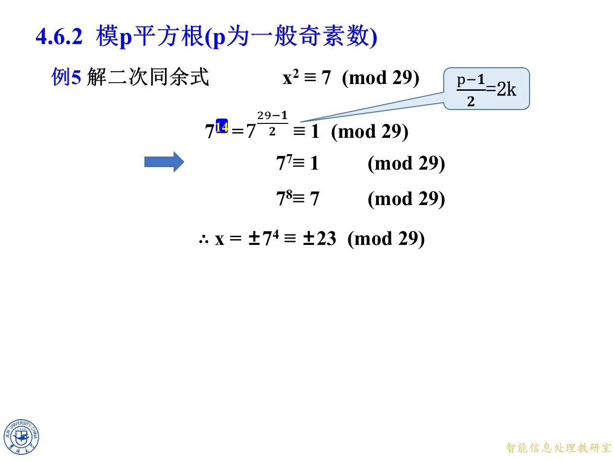
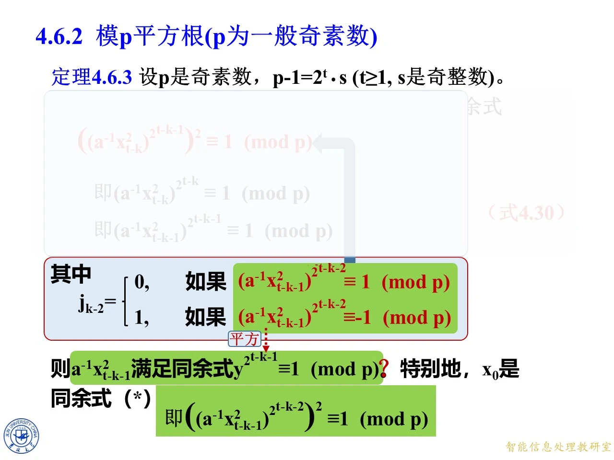
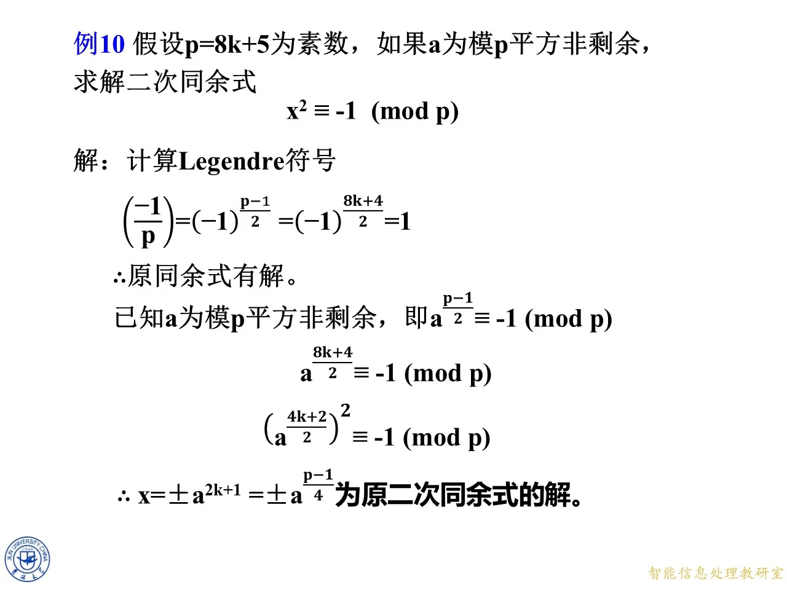

上一节只拿下了一类最好算的模素数平方根：当模素数除以四余三时，一根幂公式就能把根直接写出来。本节要对付任意奇素数——把 p 减一拆成二的幂与一个奇数之积，再借一个平方非剩余当"翻符号"的工具，逐级开方、逐级检查右边是正一还是负一，最后把根拼出来。前一半是例五到例八加一道练习，把手工步骤一步一步走通；后一半把这些步骤画成流程图，并追问"究竟凭什么判断某一级要不要乘修正因子"，从而逼近本课真正的迭代公式。本节是全章的分水岭：前面几节的公式是一次算完，这里开始需要"循环"。流程图之后，本节把它写成定理 4.6.3 的迭代公式，再用两道算例把公式跑通，追问修正因子的阶，最后收在一类能套闭式的特例上。
例5：x 2 ≡ 7 ( m o d 29 ) x^2\equiv 7\pmod{29} x 2 ≡ 7 ( mod 29 )
◆ p.393-399 ｜例5 的题目与"怎么办"
本页给出例5：解 x 2 ≡ 7 ( m o d 29 ) x^2\equiv7\pmod{29} x 2 ≡ 7 ( mod 29 ) 7 14 = 7 ( 29 − 1 ) / 2 ≡ 1 ( m o d 29 ) 7^{14}=7^{(29-1)/2}\equiv1\pmod{29} 7 14 = 7 ( 29 − 1 ) /2 ≡ 1 ( mod 29 ) 7 14 ≡ 1 7^{14}\equiv1 7 14 ≡ 1 7 15 ≡ 7 ( m o d 29 ) 7^{15}\equiv7\pmod{29} 7 15 ≡ 7 ( mod 29 )
于是问题被改写成：要找一个数，平方之后同余于 7 15 7^{15} 7 15 x ≡ 7 15 / 2 x\equiv7^{15/2} x ≡ 7 15/2 p − 1 2 = 2 k \frac{p-1}{2}=2k 2 p − 1 = 2 k 7 14 7^{14} 7 14 7 15 7^{15} 7 15
◆ p.400-402 ｜7 14 ≡ 1 7^{14}\equiv1 7 14 ≡ 1
既然 7 14 = ( 7 7 ) 2 ≡ 1 7^{14}=(7^{7})^2\equiv1 7 14 = ( 7 7 ) 2 ≡ 1 7 7 7^{7} 7 7 y 2 ≡ 1 ( m o d 29 ) y^2\equiv1\pmod{29} y 2 ≡ 1 ( mod 29 ) y 2 ≡ 1 y^2\equiv1 y 2 ≡ 1 ( y − 1 ) ( y + 1 ) ≡ 0 (y-1)(y+1)\equiv0 ( y − 1 ) ( y + 1 ) ≡ 0 y ≡ 1 y\equiv1 y ≡ 1 y ≡ − 1 y\equiv-1 y ≡ − 1 7 7 ≡ ± 1 7^{7}\equiv\pm1 7 7 ≡ ± 1
实算：7 2 = 49 ≡ 20 7^2=49\equiv20 7 2 = 49 ≡ 20 7 4 ≡ 20 2 = 400 ≡ 23 7^4\equiv20^2=400\equiv23 7 4 ≡ 2 0 2 = 400 ≡ 23 400 − 29 × 13 = 23 400-29\times13=23 400 − 29 × 13 = 23 7 7 = 7 4 ⋅ 7 2 ⋅ 7 ≡ 23 ⋅ 20 ⋅ 7 = 3220 ≡ 1 ( m o d 29 ) 7^7=7^4\cdot7^2\cdot7\equiv23\cdot20\cdot7=3220\equiv1\pmod{29} 7 7 = 7 4 ⋅ 7 2 ⋅ 7 ≡ 23 ⋅ 20 ⋅ 7 = 3220 ≡ 1 ( mod 29 ) 29 × 111 = 3219 29\times111=3219 29 × 111 = 3219 + 1 +1 + 1
◆ p.403-406 ｜收尾：x ≡ ± 7 4 ≡ ± 23 x\equiv\pm7^4\equiv\pm23 x ≡ ± 7 4 ≡ ± 23
已知 7 7 ≡ 1 7^7\equiv1 7 7 ≡ 1 7 8 ≡ 7 ( m o d 29 ) 7^8\equiv7\pmod{29} 7 8 ≡ 7 ( mod 29 ) 7 8 = ( 7 4 ) 2 7^8=(7^4)^2 7 8 = ( 7 4 ) 2 7 4 7^4 7 4 x 2 ≡ 7 x^2\equiv7 x 2 ≡ 7 x ≡ ± 7 4 x\equiv\pm7^4 x ≡ ± 7 4 7 4 ≡ 23 7^4\equiv23 7 4 ≡ 23 29 − 23 = 6 29-23=6 29 − 23 = 6
校验：23 2 = 529 = 29 × 18 + 7 23^2=529=29\times18+7 2 3 2 = 529 = 29 × 18 + 7 29 − 1 = 2 2 × 7 29-1=2^2\times7 29 − 1 = 2 2 × 7 7 14 7^{14} 7 14 7 7 7^{7} 7 7 7 8 7^{8} 7 8
另录 p.51-57 ：另一版把参数摆得更明：p − 1 = 28 = 2 2 ⋅ 7 p-1=28=2^{2}\cdot7 p − 1 = 28 = 2 2 ⋅ 7 t = 2 t=2 t = 2 s = 7 s=7 s = 7 ( p − 1 ) / 2 = 2 t − 1 s = 14 (p-1)/2=2^{t-1}s=14 ( p − 1 ) /2 = 2 t − 1 s = 14 2 2 2 7 7 7^{7} 7 7 − 1 -1 − 1 29 29 29
另录 p.58-60 （拓展）：把例5 到例8 的收尾动作抽象出来，会发现课件每题最后都在做同一件事——找到一个 T T T a T 2 ≡ 1 ( m o d p ) aT^{2}\equiv1\pmod p a T 2 ≡ 1 ( mod p ) x ≡ ± a T x\equiv\pm aT x ≡ ± a T ( a T ) 2 = a 2 T 2 = a ⋅ ( a T 2 ) ≡ a (aT)^{2}=a^{2}T^{2}=a\cdot(aT^{2})\equiv a ( a T ) 2 = a 2 T 2 = a ⋅ ( a T 2 ) ≡ a a T 2 = 7 ⋅ 7 6 = 7 7 ≡ 1 aT^{2}=7\cdot7^{6}=7^{7}\equiv1 a T 2 = 7 ⋅ 7 6 = 7 7 ≡ 1 T = 7 3 T=7^{3} T = 7 3 x = 7 ⋅ 7 3 = 7 4 = 23 x=7\cdot7^{3}=7^{4}=23 x = 7 ⋅ 7 3 = 7 4 = 23 a T 2 = 2 ⋅ 3 2 ≡ 1 aT^{2}=2\cdot3^{2}\equiv1 a T 2 = 2 ⋅ 3 2 ≡ 1 T = 3 T=3 T = 3 x = 2 ⋅ 3 = 6 x=2\cdot3=6 x = 2 ⋅ 3 = 6 T T T
拓展 （课件外补充）：本例的 p 满足 p ≡ 1 ( m o d 4 ) p\equiv1\pmod4 p ≡ 1 ( mod 4 ) p + 1 4 \frac{p+1}{4} 4 p + 1 30 4 \frac{30}{4} 4 30 a ( p − 1 ) / 2 a^{(p-1)/2} a ( p − 1 ) /2 ± 1 \pm1 ± 1

课件原图 · 第四章第3-4节-原版 · 第 406 页 查看前后已收录原页 → 例6：x 2 ≡ 10 ( m o d 13 ) x^2\equiv 10\pmod{13} x 2 ≡ 10 ( mod 13 ) − 1 -1 − 1
◆ p.407-413 ｜题目与同样的开场
例6 解 x 2 ≡ 10 ( m o d 13 ) x^2\equiv10\pmod{13} x 2 ≡ 10 ( mod 13 ) 10 − 1 ⋅ 10 7 = 10 6 = 10 ( 13 − 1 ) / 2 ≡ 1 ( m o d 13 ) 10^{-1}\cdot10^{7}=10^{6}=10^{(13-1)/2}\equiv1\pmod{13} 1 0 − 1 ⋅ 1 0 7 = 1 0 6 = 1 0 ( 13 − 1 ) /2 ≡ 1 ( mod 13 ) 10 7 ≡ 10 10^{7}\equiv10 1 0 7 ≡ 10 13 − 1 = 2 2 × 3 13-1=2^2\times3 13 − 1 = 2 2 × 3
◆ p.414-422 ｜10 3 ≡ − 1 10^3\equiv-1 1 0 3 ≡ − 1 − 1 -1 − 1
10 6 = ( 10 3 ) 2 ≡ 1 10^{6}=(10^{3})^2\equiv1 1 0 6 = ( 1 0 3 ) 2 ≡ 1 10 3 ≡ ± 1 10^3\equiv\pm1 1 0 3 ≡ ± 1 10 3 = 1000 = 13 × 76 + 12 10^3=1000=13\times76+12 1 0 3 = 1000 = 13 × 76 + 12 10 3 ≡ 12 ≡ − 1 ( m o d 13 ) 10^3\equiv12\equiv-1\pmod{13} 1 0 3 ≡ 12 ≡ − 1 ( mod 13 )
这一步拿到的是 − 1 -1 − 1 − 1 -1 − 1 − 1 -1 − 1 − 1 -1 − 1 n = 2 n=2 n = 2 2 6 ≡ − 1 ( m o d 13 ) 2^{6}\equiv-1\pmod{13} 2 6 ≡ − 1 ( mod 13 ) 2 6 = 64 = 13 × 4 + 12 2^6=64=13\times4+12 2 6 = 64 = 13 × 4 + 12 10 3 ≡ − 1 10^3\equiv-1 1 0 3 ≡ − 1 2 6 ≡ − 1 2^6\equiv-1 2 6 ≡ − 1
10 3 ⋅ 2 6 ≡ 1 ( m o d 13 ) . 10^3\cdot2^6\equiv1\pmod{13}. 1 0 3 ⋅ 2 6 ≡ 1 ( mod 13 ) .
◆ p.423-426 ｜把指数掰成偶数，收尾
现在的等式是 10 3 ⋅ 2 6 ≡ 1 10^3\cdot2^6\equiv1 1 0 3 ⋅ 2 6 ≡ 1 10 3 10^3 1 0 3 10 − 1 ⋅ 10 4 10^{-1}\cdot10^{4} 1 0 − 1 ⋅ 1 0 4 3 = − 1 + 4 3=-1+4 3 = − 1 + 4 10 4 ⋅ 2 6 ≡ 10 ( m o d 13 ) 10^{4}\cdot2^{6}\equiv10\pmod{13} 1 0 4 ⋅ 2 6 ≡ 10 ( mod 13 )
x ≡ ± 10 2 ⋅ 2 3 ( m o d 13 ) . x\equiv\pm10^{2}\cdot2^{3}\pmod{13}. x ≡ ± 1 0 2 ⋅ 2 3 ( mod 13 ) .
实算 10 2 ≡ 9 10^2\equiv9 1 0 2 ≡ 9 100 − 91 100-91 100 − 91 2 3 = 8 2^3=8 2 3 = 8 9 × 8 = 72 ≡ 7 9\times8=72\equiv7 9 × 8 = 72 ≡ 7 x ≡ ± 7 x\equiv\pm7 x ≡ ± 7 7 2 = 49 ≡ 10 7^2=49\equiv10 7 2 = 49 ≡ 10
另录 p.72-80 ：用上面那条"凑 a T 2 ≡ 1 aT^{2}\equiv1 a T 2 ≡ 1 10 3 ⋅ 2 6 ≡ 1 10^{3}\cdot2^{6}\equiv1 1 0 3 ⋅ 2 6 ≡ 1 10 ⋅ ( 10 ⋅ 2 3 ) 2 ≡ 1 10\cdot(10\cdot2^{3})^{2}\equiv1 10 ⋅ ( 10 ⋅ 2 3 ) 2 ≡ 1 a T 2 ≡ 1 aT^{2}\equiv1 a T 2 ≡ 1 T = 10 ⋅ 2 3 = 80 ≡ 2 ( m o d 13 ) T=10\cdot2^{3}=80\equiv2\pmod{13} T = 10 ⋅ 2 3 = 80 ≡ 2 ( mod 13 ) x ≡ ± a T = ± 10 ⋅ 2 = ± 20 ≡ ± 7 ( m o d 13 ) x\equiv\pm aT=\pm10\cdot2=\pm20\equiv\pm7\pmod{13} x ≡ ± a T = ± 10 ⋅ 2 = ± 20 ≡ ± 7 ( mod 13 )
另录 p.72-80 （拓展）：为什么非要乘非剩余的 2 6 2^{6} 2 6 2 6 = ( 2 3 ) 2 2^{6}=(2^{3})^{2} 2 6 = ( 2 3 ) 2 2 3 2^{3} 2 3 2 6 ≡ − 1 2^{6}\equiv-1 2 6 ≡ − 1 10 3 ≡ − 1 10^{3}\equiv-1 1 0 3 ≡ − 1 b = n s b=n^{s} b = n s s = 3 s=3 s = 3 b = 2 3 = 8 b=2^{3}=8 b = 2 3 = 8 b 2 = 2 6 ≡ − 1 b^{2}=2^{6}\equiv-1 b 2 = 2 6 ≡ − 1
拓展 （课件外补充）：这里 n = 2 n=2 n = 2 − 1 -1 − 1 n n n n ( p − 1 ) / 2 ≡ − 1 n^{(p-1)/2}\equiv-1 n ( p − 1 ) /2 ≡ − 1 − 1 -1 − 1 5 2 = 25 ≡ − 1 5^2=25\equiv-1 5 2 = 25 ≡ − 1 − 1 -1 − 1 n ( p − 1 ) / 2 ≡ − 1 n^{(p-1)/2}\equiv-1 n ( p − 1 ) /2 ≡ − 1 − 1 -1 − 1
例7：x 2 ≡ 8 ( m o d 17 ) x^2\equiv 8\pmod{17} x 2 ≡ 8 ( mod 17 )
◆ p.427-432 ｜题目与第一级
例7 解 x 2 ≡ 8 ( m o d 17 ) x^2\equiv8\pmod{17} x 2 ≡ 8 ( mod 17 ) 17 − 1 = 16 = 2 4 17-1=16=2^4 17 − 1 = 16 = 2 4 t = 4 t=4 t = 4 s = 1 s=1 s = 1 8 8 = 8 ( 17 − 1 ) / 2 ≡ 1 ( m o d 17 ) 8^{8}=8^{(17-1)/2}\equiv1\pmod{17} 8 8 = 8 ( 17 − 1 ) /2 ≡ 1 ( mod 17 ) 8 4 ≡ 1 8^{4}\equiv1 8 4 ≡ 1 − 1 -1 − 1
◆ p.433-439 ｜8 4 ≡ − 1 8^4\equiv-1 8 4 ≡ − 1 3 8 3^8 3 8
实算：8 2 = 64 ≡ 13 8^2=64\equiv13 8 2 = 64 ≡ 13 8 4 ≡ 13 2 = 169 ≡ 16 ≡ − 1 ( m o d 17 ) 8^4\equiv13^2=169\equiv16\equiv-1\pmod{17} 8 4 ≡ 1 3 2 = 169 ≡ 16 ≡ − 1 ( mod 17 ) n = 3 n=3 n = 3 2 2 2 2 8 ≡ 1 2^8\equiv1 2 8 ≡ 1 3 3 3 3 8 ≡ − 1 3^8\equiv-1 3 8 ≡ − 1 3 8 ≡ − 1 3^{8}\equiv-1 3 8 ≡ − 1 8 4 ⋅ 3 8 ≡ 1 ( m o d 17 ) 8^4\cdot3^8\equiv1\pmod{17} 8 4 ⋅ 3 8 ≡ 1 ( mod 17 )
另录 p.171-182 ：另一版把 3 8 3^{8} 3 8 8 8 8^{8} 8 8 3 8 = 6561 = 385 × 17 + 16 3^{8}=6561=385\times17+16 3 8 = 6561 = 385 × 17 + 16 8 8 = 16777216 = 986895 × 17 + 1 8^{8}=16777216=986895\times17+1 8 8 = 16777216 = 986895 × 17 + 1 3 3 3 k k k 3 ( p − 1 ) / 2 3^{(p-1)/2} 3 ( p − 1 ) /2 t − k t-k t − k x x x 3 2 k − 1 s = b 2 k − 1 3^{2^{k-1}s}=b^{2^{k-1}} 3 2 k − 1 s = b 2 k − 1 1 1 1 3 8 3^{8} 3 8 3 3 3 8 → 4 → 2 → 1 8\to4\to2\to1 8 → 4 → 2 → 1 3 1 3^{1} 3 1 2 2 2 2 2 2 8 → 4 → 2 8\to4\to2 8 → 4 → 2 3 2 3^{2} 3 2 3 3 3^{3} 3 3 3 ⋅ 3 2 3\cdot3^{2} 3 ⋅ 3 2
◆ p.440-444 ｜第二级检测又是 − 1 -1 − 1
对上式开平方：8 2 ⋅ 3 4 ≡ ± 1 8^2\cdot3^4\equiv\pm1 8 2 ⋅ 3 4 ≡ ± 1 8 2 ≡ 13 8^2\equiv13 8 2 ≡ 13 3 4 = 81 ≡ 13 3^4=81\equiv13 3 4 = 81 ≡ 13 81 − 68 = 13 81-68=13 81 − 68 = 13 13 × 13 = 169 ≡ − 1 13\times13=169\equiv-1 13 × 13 = 169 ≡ − 1 8 2 ⋅ 3 4 ≡ − 1 8^2\cdot3^4\equiv-1 8 2 ⋅ 3 4 ≡ − 1 3 8 3^8 3 8 8 2 ⋅ 3 4 ⋅ 3 8 ≡ 1 ( m o d 17 ) 8^2\cdot3^4\cdot3^8\equiv1\pmod{17} 8 2 ⋅ 3 4 ⋅ 3 8 ≡ 1 ( mod 17 )
另录 p.98-102 ：这一步之所以能开方，关键是 3 3 3 8 8 8 2 2 2 1 1 1 3 3 3 4 + 8 = 12 4+8=12 4 + 8 = 12 6 = 2 + 4 6=2+4 6 = 2 + 4 ( 8 ⋅ 3 2 ⋅ 3 4 ) 2 (8\cdot3^{2}\cdot3^{4})^{2} ( 8 ⋅ 3 2 ⋅ 3 4 ) 2
◆ p.445-448 ｜第三级检测通过，把 8 乘回去
再开平方：8 ⋅ 3 2 ⋅ 3 4 ≡ ± 1 8\cdot3^2\cdot3^4\equiv\pm1 8 ⋅ 3 2 ⋅ 3 4 ≡ ± 1 8 × 9 = 72 ≡ 4 8\times9=72\equiv4 8 × 9 = 72 ≡ 4 4 × 13 = 52 ≡ 1 4\times13=52\equiv1 4 × 13 = 52 ≡ 1 + 1 +1 + 1 8 1 8^1 8 1
8 − 1 ⋅ 8 2 ⋅ 3 2 ⋅ 3 4 ≡ 1 ( m o d 17 ) ⟹ 8 2 ⋅ 3 2 ⋅ 3 4 ≡ 8 ( m o d 17 ) , 8^{-1}\cdot8^{2}\cdot3^{2}\cdot3^{4}\equiv1\pmod{17}\ \Longrightarrow\ 8^{2}\cdot3^{2}\cdot3^{4}\equiv8\pmod{17}, 8 − 1 ⋅ 8 2 ⋅ 3 2 ⋅ 3 4 ≡ 1 ( mod 17 ) ⟹ 8 2 ⋅ 3 2 ⋅ 3 4 ≡ 8 ( mod 17 ) ,
其中 8 − 1 ≡ 15 8^{-1}\equiv15 8 − 1 ≡ 15 8 × 15 = 120 = 119 + 1 8\times15=120=119+1 8 × 15 = 120 = 119 + 1 8 2 ⋅ 3 2 ⋅ 3 4 8^{2}\cdot3^{2}\cdot3^{4} 8 2 ⋅ 3 2 ⋅ 3 4 8 8 8
◆ p.449-450 ｜两个根
把 8 2 ⋅ 3 2 ⋅ 3 4 8^{2}\cdot3^{2}\cdot3^{4} 8 2 ⋅ 3 2 ⋅ 3 4 ( 8 ⋅ 3 ⋅ 3 2 ) 2 (8\cdot3\cdot3^{2})^2 ( 8 ⋅ 3 ⋅ 3 2 ) 2
x ≡ ± 8 ⋅ 3 ⋅ 3 2 ≡ ± 12 ( m o d 17 ) . x\equiv\pm8\cdot3\cdot3^{2}\equiv\pm12\pmod{17}. x ≡ ± 8 ⋅ 3 ⋅ 3 2 ≡ ± 12 ( mod 17 ) .
实算 8 × 3 = 24 ≡ 7 8\times3=24\equiv7 8 × 3 = 24 ≡ 7 7 × 9 = 63 ≡ 12 7\times9=63\equiv12 7 × 9 = 63 ≡ 12 12 2 = 144 = 17 × 8 + 8 12^2=144=17\times8+8 1 2 2 = 144 = 17 × 8 + 8
另录 p.103-108 （拓展）：把例7 改写成后文的迭代记号会清爽很多。取 t = 4 t=4 t = 4 s = 1 s=1 s = 1 X 3 = 8 X_{3}=8 X 3 = 8 1 1 1 8 − 1 X 3 2 = 8 − 1 ⋅ 64 ≡ 8 8^{-1}X_{3}^{2}=8^{-1}\cdot64\equiv8 8 − 1 X 3 2 = 8 − 1 ⋅ 64 ≡ 8 2 2 2^{2} 2 2 8 4 ≡ − 1 8^{4}\equiv-1 8 4 ≡ − 1 X 2 = X 3 ⋅ 3 1 = 24 ≡ 7 X_{2}=X_{3}\cdot3^{1}=24\equiv7 X 2 = X 3 ⋅ 3 1 = 24 ≡ 7 2 2 2 ( 8 − 1 ⋅ 7 2 ) 2 ≡ ( 15 ⋅ 15 ) 2 ≡ 4 2 ≡ − 1 (8^{-1}\cdot7^{2})^{2}\equiv(15\cdot15)^{2}\equiv4^{2}\equiv-1 ( 8 − 1 ⋅ 7 2 ) 2 ≡ ( 15 ⋅ 15 ) 2 ≡ 4 2 ≡ − 1 X 1 = 7 ⋅ 3 2 = 63 ≡ 12 X_{1}=7\cdot3^{2}=63\equiv12 X 1 = 7 ⋅ 3 2 = 63 ≡ 12 3 3 3 8 − 1 ⋅ 12 2 ≡ 15 ⋅ 8 ≡ 1 8^{-1}\cdot12^{2}\equiv15\cdot8\equiv1 8 − 1 ⋅ 1 2 2 ≡ 15 ⋅ 8 ≡ 1 X 0 = 12 X_{0}=12 X 0 = 12
拓展 （课件外补充）：把三次检测的符号排一排是 − 1 , − 1 , + 1 -1,-1,+1 − 1 , − 1 , + 1 3 1 3^{1} 3 1 3 2 3^{2} 3 2 3 4 3^{4} 3 4 3 8 3^8 3 8 3 1 3^1 3 1 3 2 3^2 3 2
例8：x 2 ≡ 2 ( m o d 17 ) x^2\equiv 2\pmod{17} x 2 ≡ 2 ( mod 17 )
◆ p.451-454 ｜题目与第一级
例8 解 x 2 ≡ 2 ( m o d 17 ) x^2\equiv2\pmod{17} x 2 ≡ 2 ( mod 17 ) t = 4 t=4 t = 4 s = 1 s=1 s = 1 2 8 = 2 ( 17 − 1 ) / 2 ≡ 1 ( m o d 17 ) 2^{8}=2^{(17-1)/2}\equiv1\pmod{17} 2 8 = 2 ( 17 − 1 ) /2 ≡ 1 ( mod 17 ) 2 4 ≡ ± 1 2^{4}\equiv\pm1 2 4 ≡ ± 1
◆ p.455-458 ｜第二、三级一并给出
2 4 = 16 ≡ − 1 2^4=16\equiv-1 2 4 = 16 ≡ − 1 3 8 ≡ − 1 3^8\equiv-1 3 8 ≡ − 1 2 4 ⋅ 3 8 ≡ 1 2^4\cdot3^8\equiv1 2 4 ⋅ 3 8 ≡ 1 2 2 ⋅ 3 4 ≡ ± 1 2^2\cdot3^4\equiv\pm1 2 2 ⋅ 3 4 ≡ ± 1 4 × 13 = 52 ≡ 1 4\times13=52\equiv1 4 × 13 = 52 ≡ 1 + 1 +1 + 1
◆ p.459-460 ｜继续下探
2 2 ⋅ 3 4 ≡ 1 2^2\cdot3^4\equiv1 2 2 ⋅ 3 4 ≡ 1 2 1 ⋅ 3 2 ≡ ± 1 2^1\cdot3^2\equiv\pm1 2 1 ⋅ 3 2 ≡ ± 1 2 × 9 = 18 ≡ 1 2\times9=18\equiv1 2 × 9 = 18 ≡ 1 + 1 +1 + 1
◆ p.461-465 ｜乘回 2，得根
指数降到 1（奇数），乘 2 进等式：2 − 1 ⋅ 2 2 ⋅ 3 2 ≡ 1 2^{-1}\cdot2^{2}\cdot3^{2}\equiv1 2 − 1 ⋅ 2 2 ⋅ 3 2 ≡ 1 2 2 ⋅ 3 2 ≡ 2 ( m o d 17 ) 2^{2}\cdot3^{2}\equiv2\pmod{17} 2 2 ⋅ 3 2 ≡ 2 ( mod 17 ) 2 − 1 ≡ 9 2^{-1}\equiv9 2 − 1 ≡ 9 36 ≡ 2 36\equiv2 36 ≡ 2
x ≡ ± 2 ⋅ 3 ≡ ± 6 ( m o d 17 ) , x\equiv\pm2\cdot3\equiv\pm6\pmod{17}, x ≡ ± 2 ⋅ 3 ≡ ± 6 ( mod 17 ) ,
校验 6 2 = 36 ≡ 2 6^2=36\equiv2 6 2 = 36 ≡ 2
◆ p.466 ｜把整条链压成一页
这一页把例8 的每一步排成一列，标题却写成"练习 解二次同余式 x 2 ≡ 2 ( m o d 17 ) x^2\equiv2\pmod{17} x 2 ≡ 2 ( mod 17 ) 2 8 ≡ 1 → 2 4 ≡ − 1 ⇒ 2 4 ⋅ 3 8 ≡ 1 → 2 2 ⋅ 3 4 ≡ 1 → 2 1 ⋅ 3 2 ≡ 1 → 2 2 ⋅ 3 2 ≡ 2 → x ≡ ± 6 2^8\equiv1\to2^4\equiv-1\Rightarrow2^4\cdot3^8\equiv1\to2^2\cdot3^4\equiv1\to2^1\cdot3^2\equiv1\to2^2\cdot3^2\equiv2\to x\equiv\pm6 2 8 ≡ 1 → 2 4 ≡ − 1 ⇒ 2 4 ⋅ 3 8 ≡ 1 → 2 2 ⋅ 3 4 ≡ 1 → 2 1 ⋅ 3 2 ≡ 1 → 2 2 ⋅ 3 2 ≡ 2 → x ≡ ± 6 3 8 3^8 3 8
另录 p.109-124 （拓展）：例7 与例8 同模不同数，检测序列却不同（"负负正"对"负正正"），说明"要不要修正"由被开方数 a a a a a a t − 1 t-1 t − 1 3 3 3 b 2 k − 1 b^{2^{k-1}} b 2 k − 1 0 0 0 1 1 1
练习：x 2 ≡ 13 ( m o d 17 ) x^2\equiv 13\pmod{17} x 2 ≡ 13 ( mod 17 )
◆ p.467-468 ｜开场
练习解 x 2 ≡ 13 ( m o d 17 ) x^2\equiv13\pmod{17} x 2 ≡ 13 ( mod 17 ) t = 4 t=4 t = 4 s = 1 s=1 s = 1 13 8 ≡ 1 ( m o d 17 ) 13^{8}\equiv1\pmod{17} 1 3 8 ≡ 1 ( mod 17 ) 13 2 = 169 ≡ 16 13^2=169\equiv16 1 3 2 = 169 ≡ 16 13 4 ≡ 16 2 = 256 ≡ 1 13^4\equiv16^2=256\equiv1 1 3 4 ≡ 1 6 2 = 256 ≡ 1 13 8 ≡ 1 13^8\equiv1 1 3 8 ≡ 1
◆ p.469-470 ｜第一级：这回是 + 1 +1 + 1
13 8 = ( 13 4 ) 2 ≡ 1 13^{8}=(13^{4})^2\equiv1 1 3 8 = ( 1 3 4 ) 2 ≡ 1 13 4 ≡ ± 1 13^{4}\equiv\pm1 1 3 4 ≡ ± 1 13 4 ≡ 1 13^4\equiv1 1 3 4 ≡ 1
◆ p.471-472 ｜第二级给出 − 1 -1 − 1
继续：13 4 = ( 13 2 ) 2 ≡ 1 13^{4}=(13^{2})^2\equiv1 1 3 4 = ( 1 3 2 ) 2 ≡ 1 13 2 ≡ ± 1 13^{2}\equiv\pm1 1 3 2 ≡ ± 1 13 2 ≡ 16 ≡ − 1 13^2\equiv16\equiv-1 1 3 2 ≡ 16 ≡ − 1
◆ p.473-476 ｜乘 3 8 3^8 3 8
取非剩余 3，3 8 ≡ − 1 3^{8}\equiv-1 3 8 ≡ − 1 13 2 ⋅ 3 8 ≡ 1 ( m o d 17 ) 13^{2}\cdot3^{8}\equiv1\pmod{17} 1 3 2 ⋅ 3 8 ≡ 1 ( mod 17 ) 13 1 ⋅ 3 4 ≡ ± 1 13^{1}\cdot3^{4}\equiv\pm1 1 3 1 ⋅ 3 4 ≡ ± 1
◆ p.477-481 ｜收尾
实算 13 × 13 = 169 ≡ 16 ≡ − 1 13\times13=169\equiv16\equiv-1 13 × 13 = 169 ≡ 16 ≡ − 1 13 ⋅ 3 4 ⋅ 3 8 ≡ 1 13\cdot3^4\cdot3^8\equiv1 13 ⋅ 3 4 ⋅ 3 8 ≡ 1 13 − 1 ⋅ 13 2 ⋅ 3 4 ⋅ 3 8 ≡ 1 13^{-1}\cdot13^{2}\cdot3^{4}\cdot3^{8}\equiv1 1 3 − 1 ⋅ 1 3 2 ⋅ 3 4 ⋅ 3 8 ≡ 1 13 2 ⋅ 3 4 ⋅ 3 8 ≡ 13 ( m o d 17 ) 13^{2}\cdot3^{4}\cdot3^{8}\equiv13\pmod{17} 1 3 2 ⋅ 3 4 ⋅ 3 8 ≡ 13 ( mod 17 ) 13 − 1 ≡ 4 13^{-1}\equiv4 1 3 − 1 ≡ 4 4 × 13 = 52 ≡ 1 4\times13=52\equiv1 4 × 13 = 52 ≡ 1
x ≡ ± 13 ⋅ 3 2 ⋅ 3 4 ≡ ± 8 ( m o d 17 ) . x\equiv\pm13\cdot3^{2}\cdot3^{4}\equiv\pm8\pmod{17}. x ≡ ± 13 ⋅ 3 2 ⋅ 3 4 ≡ ± 8 ( mod 17 ) .
实算 13 × 9 = 117 ≡ 15 13\times9=117\equiv15 13 × 9 = 117 ≡ 15 15 × 13 = 195 ≡ 8 15\times13=195\equiv8 15 × 13 = 195 ≡ 8 195 − 187 = 8 195-187=8 195 − 187 = 8 8 2 = 64 ≡ 13 8^2=64\equiv13 8 2 = 64 ≡ 13
拓展 （课件外补充）：这道练习与例7 参数完全相同（同模、同非剩余、同 t t t − 1 , − 1 , + 1 -1,-1,+1 − 1 , − 1 , + 1 + 1 , − 1 , − 1 +1,-1,-1 + 1 , − 1 , − 1 3 1 , 3 2 , 3 4 3^1,3^2,3^4 3 1 , 3 2 , 3 4
把手工过程画成流程图：四个判断框就是全部策略
◆ p.482-483 ｜算法流程图与通向定理的过渡
这一页把前面五道题的共同骨架画成流程：起点是同余式 a ( p − 1 ) / 2 ≡ 1 ( m o d p ) a^{(p-1)/2}\equiv1\pmod p a ( p − 1 ) /2 ≡ 1 ( mod p ) − 1 -1 − 1 n ( p − 1 ) / 2 ≡ − 1 n^{(p-1)/2}\equiv-1 n ( p − 1 ) /2 ≡ − 1 n n n
用这个流程复盘前面几题：例5 只走"否→开方→否→乘 a→结束"两条边就到了底；例6 走到"右端为 − 1 -1 − 1
另录 p.140-141 ：流程图的分支还可以说得更死。判"幂次为奇数"为是，等价于 p ≡ 3 ( m o d 4 ) p\equiv3\pmod4 p ≡ 3 ( mod 4 ) a a a a ( p + 1 ) / 2 ≡ a a^{(p+1)/2}\equiv a a ( p + 1 ) /2 ≡ a ± a ( p + 1 ) / 4 \pm a^{(p+1)/4} ± a ( p + 1 ) /4 p ≡ 1 ( m o d 4 ) p\equiv1\pmod4 p ≡ 1 ( mod 4 )
拓展 （课件外补充）：流程图的精妙处在于"乘 a"与"乘 n ( p − 1 ) / 2 n^{(p-1)/2} n ( p − 1 ) /2 − 1 -1 − 1
练习 13 的账本：几级阶梯、落到哪一级停
◆ p.484-491 ｜把每一步标上参数
这一页把练习 13 的算式排成阶梯，并在旁边标出 p − 1 = 2 t ⋅ s p-1=2^{t}\cdot s p − 1 = 2 t ⋅ s 16 = 2 4 ⋅ 1 16=2^4\cdot1 16 = 2 4 ⋅ 1 t = 4 t=4 t = 4 s = 1 s=1 s = 1 p − 1 2 = 2 t − 1 ⋅ s = 8 \frac{p-1}{2}=2^{t-1}\cdot s=8 2 p − 1 = 2 t − 1 ⋅ s = 8 t − 1 = 3 t-1=3 t − 1 = 3 13 8 → 13 4 → 13 2 → 13 1 ⋅ 3 4 → 13 s + 1 13^8\to13^4\to13^2\to13^1\cdot3^4\to13^{s+1} 1 3 8 → 1 3 4 → 1 3 2 → 1 3 1 ⋅ 3 4 → 1 3 s + 1 x ≡ ± 13 ⋅ 3 2 ⋅ 3 4 ≡ ± 8 x\equiv\pm13\cdot3^2\cdot3^4\equiv\pm8 x ≡ ± 13 ⋅ 3 2 ⋅ 3 4 ≡ ± 8
答案就写在梯子上：从 13 8 13^{8} 1 3 8 13 1 13^{1} 1 3 1 t − 1 = 3 t-1=3 t − 1 = 3 s s s s = 1 s=1 s = 1 13 0 = 1 13^0=1 1 3 0 = 1
◆ p.492 ｜第一次迭代的位置与"连续开平方"
同页补出两个记号：13 s 13^{s} 1 3 s 13 s + 1 13^{s+1} 1 3 s + 1 3 8 3^8 3 8 t − 2 t-2 t − 2 3 2 s 3^{2s} 3 2 s 3 ( p − 1 ) / 2 = 3 8 3^{(p-1)/2}=3^{8} 3 ( p − 1 ) /2 = 3 8 t − 2 = 2 t-2=2 t − 2 = 2 3 2 s = 3 2 3^{2s}=3^{2} 3 2 s = 3 2 3 2 3^{2} 3 2
◆ p.493-495 ｜3 3 3
写出全式：3 ( p − 1 ) / 2 = 3 2 t − 1 s 3^{(p-1)/2}=3^{2^{t-1}s} 3 ( p − 1 ) /2 = 3 2 t − 1 s t − 2 t-2 t − 2 3 2 s 3^{2s} 3 2 s 3 8 → 3 4 → 3 2 3^8\to3^4\to3^2 3 8 → 3 4 → 3 2 3 3 3 13 13 13 3 2 i 3^{2^{i}} 3 2 i 3 ( p − 1 ) / 2 3^{(p-1)/2} 3 ( p − 1 ) /2
◆ p.496-497 ｜再降一级
继续标注：连续开平方 t − 3 t-3 t − 3 3 4 s = 3 4 3^{4s}=3^{4} 3 4 s = 3 4 3 4 3^4 3 4
◆ p.498-500 ｜为什么根里没有 3 s 3^s 3 s
课件圈出第一级 13 4 ≡ 1 13^4\equiv1 1 3 4 ≡ 1 3 ( p − 1 ) / 2 3^{(p-1)/2} 3 ( p − 1 ) /2 3 s 3^s 3 s + 1 +1 + 1 3 s 3^s 3 s x x x
◆ p.501-502 ｜总账
最后一帧把整条链、两个提问和答案汇在一页：迭代次数由 t − 1 t-1 t − 1 s s s a ( s + 1 ) / 2 a^{(s+1)/2} a ( s + 1 ) /2 3 3 3 2 2 2 s s s s s s ( s + 1 ) / 2 (s+1)/2 ( s + 1 ) /2 a ( s + 1 ) / 2 a^{(s+1)/2} a ( s + 1 ) /2
例7 再走一遍：把每一步标注成 a 2 i s a^{2^{i}s} a 2 i s b 2 j s b^{2^{j}s} b 2 j s
◆ p.503-504 ｜原页重录
这一页把例7 的完整算式原样搬上来（从 8 8 ≡ 1 8^{8}\equiv1 8 8 ≡ 1 x ≡ ± 12 x\equiv\pm12 x ≡ ± 12
◆ p.505-512 ｜打上 8 s 8^{s} 8 s 8 s + 1 8^{s+1} 8 s + 1
在底稿上给指数为 1 的那一层标 8 s 8^{s} 8 s 8 s + 1 8^{s+1} 8 s + 1 8 2 ⋅ 3 2 ⋅ 3 4 ≡ 8 8^{2}\cdot3^{2}\cdot3^{4}\equiv8 8 2 ⋅ 3 2 ⋅ 3 4 ≡ 8 8 s + 1 8^{s+1} 8 s + 1 8 8 → 8 4 → 8 2 ⋅ 3 4 → 8 1 ⋅ 3 2 ⋅ 3 4 → 8 s + 1 8^{8}\to8^{4}\to8^{2}\cdot3^{4}\to8^{1}\cdot3^{2}\cdot3^{4}\to8^{s+1} 8 8 → 8 4 → 8 2 ⋅ 3 4 → 8 1 ⋅ 3 2 ⋅ 3 4 → 8 s + 1
◆ p.513-514 ｜标出一次开方的方向
给 3 ( p − 1 ) / 2 3^{(p-1)/2} 3 ( p − 1 ) /2 8 ⋅ 3 2 ⋅ 3 4 8\cdot3^2\cdot3^4 8 ⋅ 3 2 ⋅ 3 4 3 3 3
◆ p.515-519 ｜3 s 3^{s} 3 s
写明"把 3 ( p − 1 ) / 2 = 3 2 t − 1 s 3^{(p-1)/2}=3^{2^{t-1}s} 3 ( p − 1 ) /2 = 3 2 t − 1 s t − 1 t-1 t − 1 3 s 3^{s} 3 s 8 ⋅ 3 ⋅ 3 2 8\cdot3\cdot3^2 8 ⋅ 3 ⋅ 3 2 3 s 3^{s} 3 s 3 8 → 3 4 → 3 2 → 3 1 3^8\to3^4\to3^2\to3^1 3 8 → 3 4 → 3 2 → 3 1
◆ p.520-522 ｜3 2 s 3^{2s} 3 2 s
再标第二个 3：连续开平方 t − 2 t-2 t − 2 3 2 s 3^{2s} 3 2 s 3 2 3^2 3 2 8 ( s + 1 ) / 2 8^{(s+1)/2} 8 ( s + 1 ) /2 8 1 8^{1} 8 1 s = 1 s=1 s = 1 ( s + 1 ) / 2 = 1 (s+1)/2=1 ( s + 1 ) /2 = 1
另录 p.163-170 ：同页还点出 s = 1 s=1 s = 1 p − 1 = 16 = 2 4 ⋅ 1 p-1=16=2^{4}\cdot1 p − 1 = 16 = 2 4 ⋅ 1 s = 1 s=1 s = 1 8 ( s + 1 ) / 2 = 8 1 = 8 8^{(s+1)/2}=8^{1}=8 8 ( s + 1 ) /2 = 8 1 = 8 8 8 8 s > 1 s>1 s > 1 a ( s + 1 ) / 2 a^{(s+1)/2} a ( s + 1 ) /2
◆ p.523-524 ｜根的三段结构
此时根写作 x ≡ ± 8 ( s + 1 ) / 2 ⋅ 3 s ⋅ 3 2 s x\equiv\pm8^{(s+1)/2}\cdot3^{s}\cdot3^{2s} x ≡ ± 8 ( s + 1 ) /2 ⋅ 3 s ⋅ 3 2 s
◆ p.525-526 ｜第三次迭代为何没乘
圈出第三级 8 ⋅ 3 2 ⋅ 3 4 ≡ 1 8\cdot3^2\cdot3^4\equiv1 8 ⋅ 3 2 ⋅ 3 4 ≡ 1 3 ( p − 1 ) / 2 3^{(p-1)/2} 3 ( p − 1 ) /2 3 4 s 3^{4s} 3 4 s 3 s 3^{s} 3 s + 1 +1 + 1
拓展 （课件外补充）：这一轮重录把"符号序列"翻译成了"缺项序列"。换一种说法：最终根是一个"可选的因子袋" a ( s + 1 ) / 2 ⋅ ∏ i ≥ 0 ( b 2 i s ) j i a^{(s+1)/2}\cdot\prod_{i\ge0}(b^{2^{i}s})^{j_i} a ( s + 1 ) /2 ⋅ ∏ i ≥ 0 ( b 2 i s ) j i j i ∈ { 0 , 1 } j_i\in\{0,1\} j i ∈ { 0 , 1 } j i j_i j i
判断依据的数学形式：每一级都验一次 2 2 2
◆ p.527-530 ｜练习 13 的因子袋
把练习 13 的根写成 x ≡ ± 13 ⋅ 1 ⋅ 3 2 ⋅ 3 4 x\equiv\pm13\cdot1\cdot3^{2}\cdot3^{4} x ≡ ± 13 ⋅ 1 ⋅ 3 2 ⋅ 3 4 ( 3 s ) 0 (3^{s})^{0} ( 3 s ) 0 ( 3 2 s ) 1 (3^{2s})^{1} ( 3 2 s ) 1 ( 3 4 s ) 1 (3^{4s})^{1} ( 3 4 s ) 1 13 13 13 13 ( s + 1 ) / 2 13^{(s+1)/2} 1 3 ( s + 1 ) /2
◆ p.531-532 ｜例7 的同款账本
例7 写成 x ≡ ± 8 ( s + 1 ) / 2 ⋅ 3 s ⋅ 3 2 s ⋅ 1 x\equiv\pm8^{(s+1)/2}\cdot3^{s}\cdot3^{2s}\cdot1 x ≡ ± 8 ( s + 1 ) /2 ⋅ 3 s ⋅ 3 2 s ⋅ 1 ( 3 s ) 1 (3^{s})^{1} ( 3 s ) 1 ( 3 2 s ) 1 (3^{2s})^{1} ( 3 2 s ) 1 ( 3 4 s ) 0 (3^{4s})^{0} ( 3 4 s ) 0
◆ p.533-537 ｜槽位与迭代次序的对应
课件把三条检测线与三个槽位用箭头连起来：从上往下第 1 条检测对应 3 s 3^{s} 3 s 3 2 s 3^{2s} 3 2 s 3 4 s 3^{4s} 3 4 s
◆ p.538-540 ｜把首项命名为初值
首项 8 ( s + 1 ) / 2 8^{(s+1)/2} 8 ( s + 1 ) /2 X t − 1 X_{t-1} X t − 1 s + 1 s+1 s + 1
◆ p.541-548 ｜用 2 2 2
这一页在每条检测线左侧补出指数链：8 2 t − 1 s → 8 2 t − 2 s → 8 2 t − 3 s → 8 2 t − 4 s 8^{2^{t-1}s}\to8^{2^{t-2}s}\to8^{2^{t-3}s}\to8^{2^{t-4}s} 8 2 t − 1 s → 8 2 t − 2 s → 8 2 t − 3 s → 8 2 t − 4 s 3 2 t − 1 s 3^{2^{t-1}s} 3 2 t − 1 s 3 2 t − 2 s 3^{2^{t-2}s} 3 2 t − 2 s 8 8 8 3 3 3
另录 p.217-229 ：为了让判据对任意 a a a x x x 8 8 8 8 ⋅ 3 s 8\cdot3^{s} 8 ⋅ 3 s 8 ⋅ 3 s 3 2 s 8\cdot3^{s}3^{2s} 8 ⋅ 3 s 3 2 s
8 − 1 ⋅ 8 s + 1 = 8 s , 8 − 1 ( 8 ( s + 1 ) / 2 ⋅ 3 s ) 2 = 8 s 3 2 s , 8 − 1 ( 8 ( s + 1 ) / 2 3 s 3 2 s ) 2 = 8 s 3 2 s 3 4 s . 8^{-1}\cdot8^{s+1}=8^{s},\qquad 8^{-1}\bigl(8^{(s+1)/2}\cdot3^{s}\bigr)^{2}=8^{s}3^{2s},\qquad 8^{-1}\bigl(8^{(s+1)/2}3^{s}3^{2s}\bigr)^{2}=8^{s}3^{2s}3^{4s}. 8 − 1 ⋅ 8 s + 1 = 8 s , 8 − 1 ( 8 ( s + 1 ) /2 ⋅ 3 s ) 2 = 8 s 3 2 s , 8 − 1 ( 8 ( s + 1 ) /2 3 s 3 2 s ) 2 = 8 s 3 2 s 3 4 s .
复算：8 − 1 ≡ 15 8^{-1}\equiv15 8 − 1 ≡ 15 8 × 15 = 120 = 7 × 17 + 1 8\times15=120=7\times17+1 8 × 15 = 120 = 7 × 17 + 1 8 − 1 ⋅ 8 2 = 8 8^{-1}\cdot8^{2}=8 8 − 1 ⋅ 8 2 = 8 8 s = 8 8^{s}=8 8 s = 8 8 − 1 ( 8 ⋅ 3 ) 2 = 15 × 576 = 8640 = 508 × 17 + 4 8^{-1}(8\cdot3)^{2}=15\times576=8640=508\times17+4 8 − 1 ( 8 ⋅ 3 ) 2 = 15 × 576 = 8640 = 508 × 17 + 4 8 ⋅ 3 2 = 72 ≡ 4 8\cdot3^{2}=72\equiv4 8 ⋅ 3 2 = 72 ≡ 4 a − 1 x 2 a^{-1}x^{2} a − 1 x 2 a a a x 2 x^{2} x 2 a a a
◆ p.549-550 ｜括号形式登场
把左边写成 ( 8 s ) 2 t − 2 (8^{s})^{2^{t-2}} ( 8 s ) 2 t − 2 ( 8 s 3 2 s ) 2 t − 3 (8^{s}3^{2s})^{2^{t-3}} ( 8 s 3 2 s ) 2 t − 3 ( 8 s 3 2 s 3 2 2 s ) 2 t − 4 (8^{s}3^{2s}3^{2^{2}s})^{2^{t-4}} ( 8 s 3 2 s 3 2 2 s ) 2 t − 4
◆ p.551-554 ｜三条检测的紧凑写法
三条检测并列：
( 8 s ) 2 t − 2 ≡ − 1 , ( 8 s 3 2 s ) 2 t − 3 ≡ − 1 , ( 8 s 3 2 s 3 2 2 s ) 2 t − 4 ≡ 1 ( m o d 17 ) . (8^{s})^{2^{t-2}}\equiv-1,\qquad (8^{s}3^{2s})^{2^{t-3}}\equiv-1,\qquad (8^{s}3^{2s}3^{2^{2}s})^{2^{t-4}}\equiv1\pmod{17}. ( 8 s ) 2 t − 2 ≡ − 1 , ( 8 s 3 2 s ) 2 t − 3 ≡ − 1 , ( 8 s 3 2 s 3 2 2 s ) 2 t − 4 ≡ 1 ( mod 17 ) .
把 t = 4 t=4 t = 4 s = 1 s=1 s = 1 8 4 ≡ − 1 8^{4}\equiv-1 8 4 ≡ − 1 ( 8 ⋅ 9 ) 2 ≡ − 1 (8\cdot9)^{2}\equiv-1 ( 8 ⋅ 9 ) 2 ≡ − 1 8 ⋅ 9 ⋅ 13 ≡ 1 8\cdot9\cdot13\equiv1 8 ⋅ 9 ⋅ 13 ≡ 1
◆ p.555-558 ｜褪去展开式，只留括号
画面把左边的展开式淡出，只保留括号形式，逼读者接受"检测量就是部分积的 2 2 2
◆ p.559-561 ｜符号与槽位对齐
三条检测右边统一写成 ≡ − 1 \equiv-1 ≡ − 1 ≡ − 1 \equiv-1 ≡ − 1 ≡ 1 \equiv1 ≡ 1 ( 3 s ) 1 (3^{s})^{1} ( 3 s ) 1 ( 3 2 s ) 1 (3^{2s})^{1} ( 3 2 s ) 1 ( 3 4 s ) 0 (3^{4s})^{0} ( 3 4 s ) 0 − 1 -1 − 1 1 1 1
◆ p.562-566 ｜回答"依据什么判断"
最后几帧把问题摆到明面："依据什么判断 x x x 3 s 3^{s} 3 s 3 2 s 3^{2s} 3 2 s 3 4 s 3^{4s} 3 4 s 2 2 2 1 1 1 − 1 -1 − 1 a ( p − 1 ) / 2 a^{(p-1)/2} a ( p − 1 ) /2 − 1 -1 − 1 b 2 i s b^{2^{i}s} b 2 i s 1 1 1
另录 p.208-216 ：乘子的幂次是被"插入得早晚"逼出来的——插入越晚、后面被开平方的次数越少，兑现的指数就越大，所以 x x x b , b 2 , b 4 , … , b 2 t − 2 b,b^{2},b^{4},\dots,b^{2^{t-2}} b , b 2 , b 4 , … , b 2 t − 2 t − 1 t-1 t − 1 2 t − 1 2^{t-1} 2 t − 1
拓展 （课件外补充）：为什么检测值只可能是 ± 1 \pm1 ± 1 y y y y 2 ≡ 1 ( m o d p ) y^{2}\equiv1\pmod p y 2 ≡ 1 ( mod p ) p p p ( y − 1 ) ( y + 1 ) ≡ 0 (y-1)(y+1)\equiv0 ( y − 1 ) ( y + 1 ) ≡ 0 y ≡ ± 1 y\equiv\pm1 y ≡ ± 1 t − 1 t-1 t − 1
拓展 （课件外补充）：也可以从"单位根"角度看。b = n s b=n^{s} b = n s b 2 t − 1 ≡ n ( p − 1 ) / 2 ≡ − 1 b^{2^{t-1}}\equiv n^{(p-1)/2}\equiv-1 b 2 t − 1 ≡ n ( p − 1 ) /2 ≡ − 1 b 2 t ≡ 1 b^{2^{t}}\equiv1 b 2 t ≡ 1 b b b 2 t 2^{t} 2 t p p p 2 t 2^t 2 t b 2 i s b^{2^{i}s} b 2 i s j i j_i j i i i i a − 1 x 2 a^{-1}x^{2} a − 1 x 2
拓展 （课件外补充）：手工算时最容易翻车的三处。一是把 − 1 -1 − 1 p − 1 p-1 p − 1 13 × 13 = 169 ≡ 16 ≡ − 1 13\times13=169\equiv16\equiv-1 13 × 13 = 169 ≡ 16 ≡ − 1 ( a − 1 X 2 ) 2 k (a^{-1}X^{2})^{2^{k}} ( a − 1 X 2 ) 2 k 2 2 2 a − 1 a^{-1} a − 1 8 − 1 ≡ 15 8^{-1}\equiv15 8 − 1 ≡ 15 13 − 1 ≡ 4 13^{-1}\equiv4 1 3 − 1 ≡ 4 2 − 1 ≡ 9 2^{-1}\equiv9 2 − 1 ≡ 9 10 − 1 ≡ 4 10^{-1}\equiv4 1 0 − 1 ≡ 4
从数字到字母：把 8 8 8 3 3 3 a a a n n n b = n s b=n^{s} b = n s
◆ p.567-570
从这一页开始，课件不再用具体的 8 8 8
8 2 t − 1 s = 8 p − 1 2 ≡ 1 ( m o d 17 ) , 8^{2^{t-1}s}=8^{\frac{p-1}{2}}\equiv 1\pmod{17}, 8 2 t − 1 s = 8 2 p − 1 ≡ 1 ( mod 17 ) ,
再把左边看成 ( 8 s ) 2 t − 1 (8^{s})^{2^{t-1}} ( 8 s ) 2 t − 1 2 t − 1 2^{t-1} 2 t − 1 2 t − 2 2^{t-2} 2 t − 2 ( 8 s ) 2 t − 2 ≡ ± 1 (8^{s})^{2^{t-2}}\equiv\pm 1 ( 8 s ) 2 t − 2 ≡ ± 1 8 s = 8 − 1 ⋅ 8 s + 1 = 8 − 1 ( 8 ( s + 1 ) / 2 ) 2 8^{s}=8^{-1}\cdot 8^{s+1}=8^{-1}\bigl(8^{(s+1)/2}\bigr)^{2} 8 s = 8 − 1 ⋅ 8 s + 1 = 8 − 1 ( 8 ( s + 1 ) /2 ) 2
( 8 s ) 2 t − 2 = ( 8 − 1 ( 8 s + 1 2 ) 2 ) 2 t − 2 ≡ − 1 ( m o d 17 ) . (8^{s})^{2^{t-2}}=\Bigl(8^{-1}\bigl(8^{\frac{s+1}{2}}\bigr)^{2}\Bigr)^{2^{t-2}}\equiv -1\pmod{17}. ( 8 s ) 2 t − 2 = ( 8 − 1 ( 8 2 s + 1 ) 2 ) 2 t − 2 ≡ − 1 ( mod 17 ) .
同样的改写逐行进行，三行左端分别是 ( 8 s ) 2 t − 2 (8^{s})^{2^{t-2}} ( 8 s ) 2 t − 2 ( 8 s ⋅ 3 2 s ) 2 t − 3 (8^{s}\cdot 3^{2s})^{2^{t-3}} ( 8 s ⋅ 3 2 s ) 2 t − 3 ( 8 s ⋅ 3 2 s ⋅ 3 4 s ) 2 t − 4 (8^{s}\cdot 3^{2s}\cdot 3^{4s})^{2^{t-4}} ( 8 s ⋅ 3 2 s ⋅ 3 4 s ) 2 t − 4 8 − 1 ( 8 ( s + 1 ) / 2 ⋅ 3 ⋯ ) 2 8^{-1}\bigl(8^{(s+1)/2}\cdot 3^{\cdots}\bigr)^{2} 8 − 1 ( 8 ( s + 1 ) /2 ⋅ 3 ⋯ ) 2 − 1 -1 − 1 − 1 -1 − 1 1 1 1
x = ± 8 s + 1 2 ⋅ 3 s ⋅ 3 2 s ⋅ 1 , x=\pm\, 8^{\frac{s+1}{2}}\cdot 3^{s}\cdot 3^{2s}\cdot 1, x = ± 8 2 s + 1 ⋅ 3 s ⋅ 3 2 s ⋅ 1 ,
并用绿色方框逐个标注 ( 3 s ) 1 (3^{s})^{1} ( 3 s ) 1 ( 3 2 s ) 1 (3^{2s})^{1} ( 3 2 s ) 1 ( 3 4 s ) 0 (3^{4s})^{0} ( 3 4 s ) 0 x x x 3 s 3^{s} 3 s 3 2 s 3^{2s} 3 2 s 3 4 s 3^{4s} 3 4 s
这句话点明了全节的转折：前五十页都是"算出来看符号"，现在要给出符号的判定公式 ，而不是每次手算。
◆ p.571-578
这几页是同一张图上的逐步动画，逐层给"当前根"贴标签：
p.571 在 8 8 8^{8} 8 8 8 2 t − 1 s 8^{2^{t-1}s} 8 2 t − 1 s 2 t − 1 s 2^{t-1}s 2 t − 1 s
p.572-573 把第一行的 8 ( s + 1 ) / 2 8^{(s+1)/2} 8 ( s + 1 ) /2 X t − 1 X_{t-1} X t − 1
p.574 说明 X t − 1 X_{t-1} X t − 1
p.575 把第二行括号里的 8 ( s + 1 ) / 2 ⋅ 3 s 8^{(s+1)/2}\cdot 3^{s} 8 ( s + 1 ) /2 ⋅ 3 s X t − 2 X_{t-2} X t − 2
p.576-577 把第三行括号里的 8 ( s + 1 ) / 2 ⋅ 3 s ⋅ 3 2 s 8^{(s+1)/2}\cdot 3^{s}\cdot 3^{2s} 8 ( s + 1 ) /2 ⋅ 3 s ⋅ 3 2 s X t − 3 X_{t-3} X t − 3
p.578 把最终结果标成 X t − 4 X_{t-4} X t − 4 t = 4 t=4 t = 4 X t − 4 = X 0 X_{t-4}=X_{0} X t − 4 = X 0
这条标号链讲的是同一件事：X t − 1 → X t − 2 → X t − 3 → X 0 X_{t-1}\to X_{t-2}\to X_{t-3}\to X_{0} X t − 1 → X t − 2 → X t − 3 → X 0 3 3 3 t − 1 t-1 t − 1 X 0 X_{0} X 0 1 1 1 X X X X t − k − 1 = X t − k X_{t-k-1}=X_{t-k} X t − k − 1 = X t − k
◆ p.579
这一页把模数从 17 17 17 p p p p p p 3 3 3 3 ( p − 1 ) / 2 ≡ − 1 ( m o d p ) 3^{(p-1)/2}\equiv -1\pmod p 3 ( p − 1 ) /2 ≡ − 1 ( mod p ) x 2 ≡ 8 ( m o d p ) x^{2}\equiv 8\pmod p x 2 ≡ 8 ( mod p ) 8 ( p − 1 ) / 2 ≡ 1 8^{(p-1)/2}\equiv 1 8 ( p − 1 ) /2 ≡ 1 s s s − 1 -1 − 1 − 1 -1 − 1 1 1 1
这一步的意义是确认：前面针对 17 17 17 s = 1 s=1 s = 1 t = 4 t=4 t = 4 p − 1 = 2 t s p-1=2^{t}s p − 1 = 2 t s
◆ p.580-583
最后一层抽象：把非剩余 3 3 3 n n n 8 8 8 a a a
b : = n s ( m o d p ) . b:=n^{s}\pmod p. b := n s ( mod p ) .
于是三行变成 ( a − 1 ( a ( s + 1 ) / 2 ) 2 ) 2 t − 2 ≡ − 1 (a^{-1}(a^{(s+1)/2})^{2})^{2^{t-2}}\equiv -1 ( a − 1 ( a ( s + 1 ) /2 ) 2 ) 2 t − 2 ≡ − 1 ( a − 1 ( a ( s + 1 ) / 2 ⋅ b ) 2 ) 2 t − 3 ≡ − 1 (a^{-1}(a^{(s+1)/2}\cdot b)^{2})^{2^{t-3}}\equiv -1 ( a − 1 ( a ( s + 1 ) /2 ⋅ b ) 2 ) 2 t − 3 ≡ − 1 ( a − 1 ( a ( s + 1 ) / 2 ⋅ b ⋅ b 2 ) 2 ) 2 t − 4 ≡ 1 (a^{-1}(a^{(s+1)/2}\cdot b\cdot b^{2})^{2})^{2^{t-4}}\equiv 1 ( a − 1 ( a ( s + 1 ) /2 ⋅ b ⋅ b 2 ) 2 ) 2 t − 4 ≡ 1
x = ± a s + 1 2 ⋅ b ⋅ b 2 ⋅ 1 , x=\pm\, a^{\frac{s+1}{2}}\cdot b\cdot b^{2}\cdot 1, x = ± a 2 s + 1 ⋅ b ⋅ b 2 ⋅ 1 ,
绿色方框标成 ( b ) 1 (b)^{1} ( b ) 1 ( b 2 ) 1 (b^{2})^{1} ( b 2 ) 1 ( b 4 ) 0 (b^{4})^{0} ( b 4 ) 0 b = n s b=n^{s} b = n s s s s 3 s = 3 3^{s}=3 3 s = 3 n n n n ( p − 1 ) / 2 ≡ − 1 n^{(p-1)/2}\equiv -1 n ( p − 1 ) /2 ≡ − 1 n s n^{s} n s 2 t − 1 2^{t-1} 2 t − 1 − 1 -1 − 1
拓展 （课件外补充）：b = n s b=n^{s} b = n s n n n p − 1 p-1 p − 1 n s n^{s} n s 2 t 2^{t} 2 t b 2 t − 1 ≡ − 1 b^{2^{t-1}}\equiv -1 b 2 t − 1 ≡ − 1 b 2 t ≡ 1 b^{2^{t}}\equiv 1 b 2 t ≡ 1 b 2 k − 1 b^{2^{k-1}} b 2 k − 1 n n n s s s
定理 4.6.3：把"看符号"写成公式
◆ p.584-585
课件先把判断依据单独拎出来：
( a − 1 X t − k 2 ) 2 t − k − 1 ≡ ± 1 ( m o d p ) , \bigl(a^{-1}X_{t-k}^{2}\bigr)^{2^{t-k-1}}\equiv \pm 1\pmod p, ( a − 1 X t − k 2 ) 2 t − k − 1 ≡ ± 1 ( mod p ) ,
并据此定义指示量 j k − 1 ∈ { 0 , 1 } j_{k-1}\in\{0,1\} j k − 1 ∈ { 0 , 1 }
( a − 1 X t − k 2 ) 2 t − k − 1 ≡ 1 ( m o d p ) , \bigl(a^{-1}X_{t-k}^{2}\bigr)^{2^{t-k-1}}\equiv 1\pmod p, ( a − 1 X t − k 2 ) 2 t − k − 1 ≡ 1 ( mod p ) ,
就取 j k − 1 = 0 j_{k-1}=0 j k − 1 = 0
( a − 1 X t − k 2 ) 2 t − k − 1 ≡ − 1 ( m o d p ) , \bigl(a^{-1}X_{t-k}^{2}\bigr)^{2^{t-k-1}}\equiv -1\pmod p, ( a − 1 X t − k 2 ) 2 t − k − 1 ≡ − 1 ( mod p ) ,
就取 j k − 1 = 1 j_{k-1}=1 j k − 1 = 1 检测为 1 1 1 0 0 0 − 1 -1 − 1 1 1 1 。
这一步解决前面反复出现的"要不要乘 3 s 3^{s} 3 s 0 / 1 0/1 0/1 2 t − k − 1 2^{t-k-1} 2 t − k − 1 t − k t-k t − k 2 t − k − 1 2^{t-k-1} 2 t − k − 1
◆ p.586-588 ｜定理 4.6.3（式 4.30）
定理全文：设 p p p p − 1 = 2 t ⋅ s p-1=2^{t}\cdot s p − 1 = 2 t ⋅ s t ≥ 1 t\ge 1 t ≥ 1 s s s n n n p p p b : = n s ( m o d p ) b:=n^{s}\pmod p b := n s ( mod p )
x 2 ≡ a ( m o d p ) ( ∗ ) x^{2}\equiv a\pmod p\qquad (*) x 2 ≡ a ( mod p ) ( ∗ )
有解，定义
X t − 1 = a s + 1 2 ( m o d p ) , X t − k − 1 = X t − k b j k − 1 2 k − 1 ( m o d p ) , 1 ≤ k ≤ t − 1 , X_{t-1}=a^{\frac{s+1}{2}}\pmod p,\qquad X_{t-k-1}=X_{t-k}\,b^{\,j_{k-1}2^{k-1}}\pmod p,\quad 1\le k\le t-1, X t − 1 = a 2 s + 1 ( mod p ) , X t − k − 1 = X t − k b j k − 1 2 k − 1 ( mod p ) , 1 ≤ k ≤ t − 1 ,
其中 j k − 1 j_{k-1} j k − 1 a − 1 X t − k − 1 2 a^{-1}X_{t-k-1}^{2} a − 1 X t − k − 1 2 y 2 t − k − 1 ≡ 1 ( m o d p ) y^{2^{t-k-1}}\equiv 1\pmod p y 2 t − k − 1 ≡ 1 ( mod p ) X 0 X_{0} X 0 ( ∗ ) (*) ( ∗ )
页面右侧补了一句大白话：j k − 1 = 0 j_{k-1}=0 j k − 1 = 0 X t − k − 1 = X t − k X_{t-k-1}=X_{t-k} X t − k − 1 = X t − k j k − 1 = 1 j_{k-1}=1 j k − 1 = 1 X t − k − 1 = X t − k b 2 k − 1 X_{t-k-1}=X_{t-k}b^{2^{k-1}} X t − k − 1 = X t − k b 2 k − 1
另录 p.245-246 ：定理陈述旁还点了三个必须记牢的前提：a a a a ≢ 0 a\not\equiv0 a ≡ 0 a − 1 a^{-1} a − 1 n n n b b b − 1 -1 − 1
◆ p.589
这一页用绿框把 j k − 1 j_{k-1} j k − 1 a − 1 X t − k − 1 2 a^{-1}X_{t-k-1}^{2} a − 1 X t − k − 1 2 y 2 t − k − 1 ≡ 1 y^{2^{t-k-1}}\equiv 1 y 2 t − k − 1 ≡ 1 X 0 X_0 X 0 1 1 1 2 0 = 1 2^{0}=1 2 0 = 1 a − 1 X 0 2 ≡ 1 a^{-1}X_{0}^{2}\equiv 1 a − 1 X 0 2 ≡ 1 X 0 2 ≡ a X_{0}^{2}\equiv a X 0 2 ≡ a
◆ p.590-592
证明的第一步：由 j k − 1 j_{k-1} j k − 1 ± 1 \pm1 ± 1 1 1 1
( ( a − 1 X t − k 2 ) 2 t − k − 1 ) 2 ≡ 1 ( m o d p ) , \Bigl(\bigl(a^{-1}X_{t-k}^{2}\bigr)^{2^{t-k-1}}\Bigr)^{2}\equiv 1\pmod p, ( ( a − 1 X t − k 2 ) 2 t − k − 1 ) 2 ≡ 1 ( mod p ) ,
即 ( a − 1 X t − k 2 ) 2 t − k ≡ 1 ( m o d p ) (a^{-1}X_{t-k}^{2})^{2^{t-k}}\equiv 1\pmod p ( a − 1 X t − k 2 ) 2 t − k ≡ 1 ( mod p ) ( a − 1 X t − k − 1 2 ) 2 t − k − 1 ≡ 1 ( m o d p ) (a^{-1}X_{t-k-1}^{2})^{2^{t-k-1}}\equiv 1\pmod p ( a − 1 X t − k − 1 2 ) 2 t − k − 1 ≡ 1 ( mod p ) X t − k X_{t-k} X t − k X t − k − 1 X_{t-k-1} X t − k − 1 b j k − 1 2 k − 1 b^{j_{k-1}2^{k-1}} b j k − 1 2 k − 1 ± 1 \pm1 ± 1
◆ p.593
归纳的下一层：对 X t − k − 1 X_{t-k-1} X t − k − 1
( a − 1 X t − k − 1 2 ) 2 t − k − 2 ≡ ± 1 ( m o d p ) , 1 ≤ k ≤ t − 2 , \bigl(a^{-1}X_{t-k-1}^{2}\bigr)^{2^{t-k-2}}\equiv \pm 1\pmod p,\qquad 1\le k\le t-2, ( a − 1 X t − k − 1 2 ) 2 t − k − 2 ≡ ± 1 ( mod p ) , 1 ≤ k ≤ t − 2 ,
而它的平方又等于 1 1 1 ( ( a − 1 X t − k − 1 2 ) 2 t − k − 2 ) 2 ≡ 1 \bigl((a^{-1}X_{t-k-1}^{2})^{2^{t-k-2}}\bigr)^{2}\equiv 1 ( ( a − 1 X t − k − 1 2 ) 2 t − k − 2 ) 2 ≡ 1 j k − 2 j_{k-2} j k − 2 每次归纳的引擎都是"± 1 \pm1 ± 1 1 1 1 。
另录 p.247-251 （拓展）：课件把"为什么检测量只能取 ± 1 \pm1 ± 1 c 2 ≡ 1 ( m o d p ) c^{2}\equiv1\pmod p c 2 ≡ 1 ( mod p ) p ∣ ( c − 1 ) ( c + 1 ) p\mid(c-1)(c+1) p ∣ ( c − 1 ) ( c + 1 ) p p p p ∣ c − 1 p\mid c-1 p ∣ c − 1 p ∣ c + 1 p\mid c+1 p ∣ c + 1 c ≡ 1 c\equiv1 c ≡ 1 c ≡ − 1 c\equiv-1 c ≡ − 1 p p p p ≠ 2 p\ne2 p = 2 1 1 1 p − X 0 p-X_{0} p − X 0
拓展 （课件外补充，补全定理 4.6.3 的证明）：课件从"( a − 1 X t − k 2 ) 2 t − k ≡ 1 (a^{-1}X_{t-k}^{2})^{2^{t-k}}\equiv 1 ( a − 1 X t − k 2 ) 2 t − k ≡ 1 ( a − 1 X t − k − 1 2 ) 2 t − k − 1 ≡ 1 (a^{-1}X_{t-k-1}^{2})^{2^{t-k-1}}\equiv 1 ( a − 1 X t − k − 1 2 ) 2 t − k − 1 ≡ 1 X t − k − 1 = X t − k b j k − 1 2 k − 1 X_{t-k-1}=X_{t-k}b^{j_{k-1}2^{k-1}} X t − k − 1 = X t − k b j k − 1 2 k − 1
a − 1 X t − k − 1 2 = a − 1 X t − k 2 ⋅ b j k − 1 2 k , a^{-1}X_{t-k-1}^{2}=a^{-1}X_{t-k}^{2}\cdot b^{\,j_{k-1}2^{k}}, a − 1 X t − k − 1 2 = a − 1 X t − k 2 ⋅ b j k − 1 2 k ,
再取 2 t − k − 1 2^{t-k-1} 2 t − k − 1
( a − 1 X t − k − 1 2 ) 2 t − k − 1 = ( a − 1 X t − k 2 ) 2 t − k − 1 ⋅ b j k − 1 2 t − 1 . \bigl(a^{-1}X_{t-k-1}^{2}\bigr)^{2^{t-k-1}}=\bigl(a^{-1}X_{t-k}^{2}\bigr)^{2^{t-k-1}}\cdot b^{\,j_{k-1}2^{t-1}}. ( a − 1 X t − k − 1 2 ) 2 t − k − 1 = ( a − 1 X t − k 2 ) 2 t − k − 1 ⋅ b j k − 1 2 t − 1 .
而 b 2 t − 1 = n s 2 t − 1 = n ( p − 1 ) / 2 ≡ − 1 b^{2^{t-1}}=n^{s2^{t-1}}=n^{(p-1)/2}\equiv -1 b 2 t − 1 = n s 2 t − 1 = n ( p − 1 ) /2 ≡ − 1 n n n ( − 1 ) j k − 1 (-1)^{j_{k-1}} ( − 1 ) j k − 1 j = 0 j=0 j = 0 1 1 1 j = 1 j=1 j = 1 − 1 -1 − 1 − 1 -1 − 1 1 1 1 1 1 1
归纳的起点是 k = 1 k=1 k = 1 a − 1 X t − 1 2 = a − 1 ⋅ a s + 1 = a s a^{-1}X_{t-1}^{2}=a^{-1}\cdot a^{s+1}=a^{s} a − 1 X t − 1 2 = a − 1 ⋅ a s + 1 = a s ( a s ) 2 t − 1 = a ( p − 1 ) / 2 ≡ 1 (a^{s})^{2^{t-1}}=a^{(p-1)/2}\equiv 1 ( a s ) 2 t − 1 = a ( p − 1 ) /2 ≡ 1 a a a k = t − 1 k=t-1 k = t − 1 2 0 = 1 2^{0}=1 2 0 = 1 a − 1 X 0 2 ≡ 1 a^{-1}X_{0}^{2}\equiv 1 a − 1 X 0 2 ≡ 1 X 0 2 ≡ a X_{0}^{2}\equiv a X 0 2 ≡ a ± X 0 \pm X_{0} ± X 0

课件原图 · 第四章第3-4节-原版 · 第 593 页 查看前后已收录原页 → 回到例 7：用定理的语言重算一遍
◆ p.594-602
课件把定理 4.6.3 套回 x 2 ≡ 8 ( m o d 17 ) x^{2}\equiv 8\pmod{17} x 2 ≡ 8 ( mod 17 ) t = 4 t=4 t = 4 s = 1 s=1 s = 1 n = 3 n=3 n = 3 b = 3 b=3 b = 3 8 4 ≡ − 1 8^{4}\equiv -1 8 4 ≡ − 1 8 4 ⋅ 3 8 ≡ 1 8^{4}\cdot 3^{8}\equiv 1 8 4 ⋅ 3 8 ≡ 1 8 2 ⋅ 3 4 ≡ − 1 8^{2}\cdot 3^{4}\equiv -1 8 2 ⋅ 3 4 ≡ − 1 8 2 ⋅ 3 4 ⋅ 3 8 ≡ 1 8^{2}\cdot 3^{4}\cdot 3^{8}\equiv 1 8 2 ⋅ 3 4 ⋅ 3 8 ≡ 1 8 1 ⋅ 3 2 ⋅ 3 4 ≡ 1 8^{1}\cdot 3^{2}\cdot 3^{4}\equiv 1 8 1 ⋅ 3 2 ⋅ 3 4 ≡ 1 8 − 1 8^{-1} 8 − 1 8 2 ⋅ 3 2 ⋅ 3 4 ≡ 8 8^{2}\cdot 3^{2}\cdot 3^{4}\equiv 8 8 2 ⋅ 3 2 ⋅ 3 4 ≡ 8 x ≡ ± 8 ⋅ 3 ⋅ 3 2 ≡ ± 12 x\equiv\pm 8\cdot 3\cdot 3^{2}\equiv\pm 12 x ≡ ± 8 ⋅ 3 ⋅ 3 2 ≡ ± 12
页面上的红字标注"第三次迭代没乘 3 ( p − 1 ) / 2 3^{(p-1)/2} 3 ( p − 1 ) /2 3 4 s 3^{4s} 3 4 s j 2 = 0 j_{2}=0 j 2 = 0 1 1 1 3 3 3 b 4 = 3 4 ⋅ 1 b^{4}=3^{4\cdot 1} b 4 = 3 4 ⋅ 1 X t − k − 1 = X t − k b j k − 1 2 k − 1 X_{t-k-1}=X_{t-k}b^{j_{k-1}2^{k-1}} X t − k − 1 = X t − k b j k − 1 2 k − 1
另录 p.252-260 ：用指示量写成一行就是 X 0 = X 3 b j 0 b 2 j 1 b 4 j 2 = 8 ⋅ 3 ⋅ 3 2 ⋅ 3 0 = 216 ≡ 12 ( m o d 17 ) X_{0}=X_{3}b^{j_{0}}b^{2j_{1}}b^{4j_{2}}=8\cdot3\cdot3^{2}\cdot3^{0}=216\equiv12\pmod{17} X 0 = X 3 b j 0 b 2 j 1 b 4 j 2 = 8 ⋅ 3 ⋅ 3 2 ⋅ 3 0 = 216 ≡ 12 ( mod 17 ) ( j 0 , j 1 , j 2 ) = ( 1 , 1 , 0 ) (j_{0},j_{1},j_{2})=(1,1,0) ( j 0 , j 1 , j 2 ) = ( 1 , 1 , 0 ) ( 0 , 1 , 1 ) (0,1,1) ( 0 , 1 , 1 ) 1 1 1 3 s 3^{s} 3 s 3 4 s 3^{4s} 3 4 s
◆ p.603-604
这一页把 k = t − 1 k=t-1 k = t − 1 2 t − k − 1 = 2 0 = 1 2^{t-k-1}=2^{0}=1 2 t − k − 1 = 2 0 = 1 y = a − 1 X 0 2 y=a^{-1}X_{0}^{2} y = a − 1 X 0 2 y 2 0 ≡ 1 y^{2^{0}}\equiv 1 y 2 0 ≡ 1 a − 1 X 0 2 ≡ 1 a^{-1}X_{0}^{2}\equiv 1 a − 1 X 0 2 ≡ 1 X 0 2 ≡ a X_{0}^{2}\equiv a X 0 2 ≡ a
所以循环只需做到 k = t − 1 k=t-1 k = t − 1 最后一轮不再开方 。同时页面标出一般式 ( a − 1 X t − k − 1 2 ) 2 t − k − 2 ≡ ± 1 (a^{-1}X_{t-k-1}^{2})^{2^{t-k-2}}\equiv \pm 1 ( a − 1 X t − k − 1 2 ) 2 t − k − 2 ≡ ± 1 1 ≤ k ≤ t − 2 1\le k\le t-2 1 ≤ k ≤ t − 2 k ≤ t − 2 k\le t-2 k ≤ t − 2 k = t − 1 k=t-1 k = t − 1 − 1 -1 − 1
拓展 （课件外补充）：把轮数数清楚：k k k 1 1 1 t − 1 t-1 t − 1 t − 1 t-1 t − 1 2 t − 1 s 2^{t-1}s 2 t − 1 s s s s a a a a s a^{s} a s a 0 a^{0} a 0 t − 1 t-1 t − 1 a a a t = 1 t=1 t = 1 p ≡ 3 ( m o d 4 ) p\equiv 3\pmod 4 p ≡ 3 ( mod 4 ) X t − 1 = X 0 = a ( s + 1 ) / 2 = a ( p + 1 ) / 4 X_{t-1}=X_{0}=a^{(s+1)/2}=a^{(p+1)/4} X t − 1 = X 0 = a ( s + 1 ) /2 = a ( p + 1 ) /4
算法的流程图：p ≡ 1 ( m o d 4 ) p\equiv 1\pmod 4 p ≡ 1 ( mod 4 )
◆ p.605-606
课件给出正式版流程图，标题条件是"当 ( a / p ) = 1 (a/p)=1 ( a / p ) = 1 x 2 ≡ a ( m o d p ) x^{2}\equiv a\pmod p x 2 ≡ a ( mod p ) p = 4 k + 1 p=4k+1 p = 4 k + 1
对奇素数 p p p p − 1 = 2 t ⋅ s p-1=2^{t}\cdot s p − 1 = 2 t ⋅ s t ≥ 1 t\ge 1 t ≥ 1 s s s
任取一个模 p p p n n n b = n s ( m o d p ) b=n^{s}\pmod p b = n s ( mod p )
取初值 X t − 1 = a ( s + 1 ) / 2 ( m o d p ) X_{t-1}=a^{(s+1)/2}\pmod p X t − 1 = a ( s + 1 ) /2 ( mod p ) k = 1 k=1 k = 1
判断 k > t − 1 k>t-1 k > t − 1 x ≡ ± X 0 ( m o d p ) x\equiv\pm X_{0}\pmod p x ≡ ± X 0 ( mod p )
否则计算检测量 ( a − 1 X t − k 2 ) 2 t − k − 1 (a^{-1}X_{t-k}^{2})^{2^{t-k-1}} ( a − 1 X t − k 2 ) 2 t − k − 1 ≡ 1 \equiv 1 ≡ 1 j k − 1 = 0 j_{k-1}=0 j k − 1 = 0 j k − 1 = 1 j_{k-1}=1 j k − 1 = 1
更新 X t − k − 1 = X t − k b j k − 1 2 k − 1 ( m o d p ) X_{t-k-1}=X_{t-k}b^{j_{k-1}2^{k-1}}\pmod p X t − k − 1 = X t − k b j k − 1 2 k − 1 ( mod p ) k ← k + 1 k\leftarrow k+1 k ← k + 1
和前面那张"开平方/乘非剩余"的直觉版流程图（另录 p.140-141）相比，这一版把"共几次、何时停"回答死了：循环次数由 t t t k > t − 1 k>t-1 k > t − 1 k > t − 1 k>t-1 k > t − 1 Y Y Y x ≡ ± X 0 x\equiv\pm X_{0} x ≡ ± X 0 X 0 X_{0} X 0
另录 p.263-264 ：标题里的 p = 4 k + 1 p=4k+1 p = 4 k + 1 p ≡ 1 ( m o d 4 ) p\equiv1\pmod4 p ≡ 1 ( mod 4 ) 16 , 40 , 1600 16,40,1600 16 , 40 , 1600 4 4 4 t ≥ 2 t\ge2 t ≥ 2 p ≡ 3 ( m o d 4 ) p\equiv3\pmod4 p ≡ 3 ( mod 4 ) t = 1 t=1 t = 1 n = 2 , 3 , 5 , … n=2,3,5,\dots n = 2 , 3 , 5 , …
拓展 （课件外补充）：这个流程每轮做一次求幂（指数 2 t − k − 1 2^{t-k-1} 2 t − k − 1 O ( t ) O(t) O ( t ) a − 1 a^{-1} a − 1 log p \log p log p x = 0 , 1 , … x=0,1,\dots x = 0 , 1 , … b b b n s n^{s} n s b b b j j j
例 9：x 2 ≡ 8 ( m o d 41 ) x^{2}\equiv 8\pmod{41} x 2 ≡ 8 ( mod 41 )
◆ p.607-608 ｜解法一：把指数配成平方
先判有解：a = 8 a=8 a = 8
( 8 41 ) = ( 2 3 41 ) = ( 2 41 ) = ( − 1 ) 41 2 − 1 8 = ( − 1 ) 210 = 1 , \Bigl(\frac{8}{41}\Bigr)=\Bigl(\frac{2^{3}}{41}\Bigr)=\Bigl(\frac{2}{41}\Bigr)=(-1)^{\frac{41^{2}-1}{8}}=(-1)^{210}=1, ( 41 8 ) = ( 41 2 3 ) = ( 41 2 ) = ( − 1 ) 8 4 1 2 − 1 = ( − 1 ) 210 = 1 ,
（用到 ( 2 / p ) = ( − 1 ) ( p 2 − 1 ) / 8 (2/p)=(-1)^{(p^{2}-1)/8} ( 2/ p ) = ( − 1 ) ( p 2 − 1 ) /8 a = 2 3 a=2^{3} a = 2 3 ( 2 3 / p ) = ( 2 / p ) 3 = ( 2 / p ) (2^{3}/p)=(2/p)^{3}=(2/p) ( 2 3 / p ) = ( 2/ p ) 3 = ( 2/ p )
解法一的思路与前面几题完全一样，只是把"开平方"写成指数运算：p − 1 = 40 = 2 3 ⋅ 5 p-1=40=2^{3}\cdot 5 p − 1 = 40 = 2 3 ⋅ 5 ( p − 1 ) / 2 = 20 (p-1)/2=20 ( p − 1 ) /2 = 20 8 20 ≡ 1 ( m o d 41 ) 8^{20}\equiv 1\pmod{41} 8 20 ≡ 1 ( mod 41 )
8 20 ≡ 1 8^{20}\equiv 1 8 20 ≡ 1 8 10 ≡ ± 1 8^{10}\equiv\pm1 8 10 ≡ ± 1 8 10 ≡ − 1 8^{10}\equiv -1 8 10 ≡ − 1 8 10 = 40 ≡ − 1 8^{10}=40\equiv -1 8 10 = 40 ≡ − 1 取模 41 41 41 3 3 3 3 20 ≡ − 1 3^{20}\equiv -1 3 20 ≡ − 1 8 10 ⋅ 3 20 ≡ 1 8^{10}\cdot 3^{20}\equiv 1 8 10 ⋅ 3 20 ≡ 1
开方得 8 5 ⋅ 3 10 ≡ ± 1 8^{5}\cdot 3^{10}\equiv\pm1 8 5 ⋅ 3 10 ≡ ± 1 ≡ − 1 \equiv -1 ≡ − 1 8 5 ≡ 9 8^{5}\equiv 9 8 5 ≡ 9 3 10 ≡ 9 3^{10}\equiv 9 3 10 ≡ 9 9 ⋅ 9 = 81 ≡ − 1 9\cdot 9=81\equiv -1 9 ⋅ 9 = 81 ≡ − 1
再乘 3 20 3^{20} 3 20 8 5 ⋅ 3 10 ⋅ 3 20 ≡ 1 8^{5}\cdot 3^{10}\cdot 3^{20}\equiv 1 8 5 ⋅ 3 10 ⋅ 3 20 ≡ 1
两边乘 8 8 8 8 6 ⋅ 3 10 ⋅ 3 20 ≡ 8 8^{6}\cdot 3^{10}\cdot 3^{20}\equiv 8 8 6 ⋅ 3 10 ⋅ 3 20 ≡ 8 ( 8 3 ⋅ 3 5 ⋅ 3 10 ) 2 (8^{3}\cdot 3^{5}\cdot 3^{10})^{2} ( 8 3 ⋅ 3 5 ⋅ 3 10 ) 2 x ≡ ± 8 3 ⋅ 3 5 ⋅ 3 10 x\equiv\pm 8^{3}\cdot 3^{5}\cdot 3^{10} x ≡ ± 8 3 ⋅ 3 5 ⋅ 3 10
复算这个乘积：8 3 ≡ 20 8^{3}\equiv 20 8 3 ≡ 20 3 5 ≡ 38 3^{5}\equiv 38 3 5 ≡ 38 3 10 ≡ 9 3^{10}\equiv 9 3 10 ≡ 9 20 ⋅ 38 ⋅ 9 = 6840 = 41 × 166 + 34 20\cdot 38\cdot 9=6840=41\times 166+34 20 ⋅ 38 ⋅ 9 = 6840 = 41 × 166 + 34 x ≡ ± 34 x\equiv\pm 34 x ≡ ± 34 x ≡ ± 7 x\equiv\pm 7 x ≡ ± 7 34 ≡ − 7 ( m o d 41 ) 34\equiv -7\pmod{41} 34 ≡ − 7 ( mod 41 ) ± 34 \pm 34 ± 34 ± 7 \pm 7 ± 7 { 7 , 34 } \{7,34\} { 7 , 34 } 7 2 = 49 ≡ 8 7^{2}=49\equiv 8 7 2 = 49 ≡ 8 34 2 = 1156 = 41 × 28 + 8 34^{2}=1156=41\times 28+8 3 4 2 = 1156 = 41 × 28 + 8
另录 p.265-266 ：另一版把解法一的整数验算写全了：8 10 = 1073741824 ≡ − 1 ( m o d 41 ) 8^{10}=1073741824\equiv-1\pmod{41} 8 10 = 1073741824 ≡ − 1 ( mod 41 ) 40 40 40 8 5 = 32768 ≡ 9 8^{5}=32768\equiv9 8 5 = 32768 ≡ 9 3 10 = 59049 ≡ 9 3^{10}=59049\equiv9 3 10 = 59049 ≡ 9 3 3 3
◆ p.609-616 ｜解法二：按定理查表
课件把 p − 1 = 2 3 ⋅ 5 p-1=2^{3}\cdot 5 p − 1 = 2 3 ⋅ 5 t = 3 t=3 t = 3 s = 5 s=5 s = 5 n = 3 n=3 n = 3 ( 3 / 41 ) = − 1 (3/41)=-1 ( 3/41 ) = − 1 b = 3 5 ≡ 38 ( m o d 41 ) b=3^{5}\equiv 38\pmod{41} b = 3 5 ≡ 38 ( mod 41 ) a = 8 a=8 a = 8 a − 1 ≡ − 5 ≡ 36 ( m o d 41 ) a^{-1}\equiv -5\equiv 36\pmod{41} a − 1 ≡ − 5 ≡ 36 ( mod 41 ) 8 × 36 = 288 = 41 × 7 + 1 8\times 36=288=41\times 7+1 8 × 36 = 288 = 41 × 7 + 1
初值 X t − 1 = X 2 = a ( s + 1 ) / 2 = 8 ( 5 + 1 ) / 2 = 8 3 ≡ 20 ( m o d 41 ) X_{t-1}=X_{2}=a^{(s+1)/2}=8^{(5+1)/2}=8^{3}\equiv 20\pmod{41} X t − 1 = X 2 = a ( s + 1 ) /2 = 8 ( 5 + 1 ) /2 = 8 3 ≡ 20 ( mod 41 ) k k k t − k t-k t − k X t − k X_{t-k} X t − k ( a − 1 X t − k 2 ) 2 t − k − 1 (a^{-1}X_{t-k}^{2})^{2^{t-k-1}} ( a − 1 X t − k 2 ) 2 t − k − 1 j k − 1 j_{k-1} j k − 1 b j k − 1 2 k − 1 b^{j_{k-1}2^{k-1}} b j k − 1 2 k − 1
◆ p.617-619
第 1 行：k = 1 k=1 k = 1 t − k = 2 t-k=2 t − k = 2 X 2 = 20 X_{2}=20 X 2 = 20 − 1 -1 − 1 j 0 = 1 j_{0}=1 j 0 = 1 b 2 0 = b = 38 b^{2^{0}}=b=38 b 2 0 = b = 38 X 1 = 20 ⋅ 38 = 760 X_{1}=20\cdot 38=760 X 1 = 20 ⋅ 38 = 760 760 = 41 × 18 + 22 760=41\times 18+22 760 = 41 × 18 + 22 X 1 = 22 X_{1}=22 X 1 = 22
第 2 行：k = 2 k=2 k = 2 t − k = 1 t-k=1 t − k = 1 X 1 = 22 X_{1}=22 X 1 = 22 − 1 -1 − 1 j 1 = 1 j_{1}=1 j 1 = 1 b 2 1 = b 2 b^{2^{1}}=b^{2} b 2 1 = b 2 b 2 = 38 2 = 1444 = 41 × 35 + 9 b^{2}=38^{2}=1444=41\times 35+9 b 2 = 3 8 2 = 1444 = 41 × 35 + 9 b 2 ≡ 9 ( m o d 41 ) b^{2}\equiv 9\pmod{41} b 2 ≡ 9 ( mod 41 ) 38 2 ≡ 9 38^{2}\equiv 9 3 8 2 ≡ 9 X 0 = 22 ⋅ 9 = 198 = 41 × 4 + 34 X_{0}=22\cdot 9=198=41\times 4+34 X 0 = 22 ⋅ 9 = 198 = 41 × 4 + 34 X 0 = 34 X_{0}=34 X 0 = 34
另录 p.267-274 ：两轮检测量都能真算出来。第 1 轮 ( a − 1 X 2 2 ) 2 t − k − 1 = ( 36 ⋅ 20 2 ) 2 = 9 2 = 81 ≡ − 1 ( m o d 41 ) (a^{-1}X_{2}^{2})^{2^{t-k-1}}=(36\cdot20^{2})^{2}=9^{2}=81\equiv-1\pmod{41} ( a − 1 X 2 2 ) 2 t − k − 1 = ( 36 ⋅ 2 0 2 ) 2 = 9 2 = 81 ≡ − 1 ( mod 41 ) 36 × 400 = 14400 = 351 × 41 + 9 36\times400=14400=351\times41+9 36 × 400 = 14400 = 351 × 41 + 9 ( 36 ⋅ 22 2 ) 1 = 36 × 484 = 17424 ≡ − 1 ( m o d 41 ) (36\cdot22^{2})^{1}=36\times484=17424\equiv-1\pmod{41} ( 36 ⋅ 2 2 2 ) 1 = 36 × 484 = 17424 ≡ − 1 ( mod 41 ) 41 × 425 = 17425 41\times425=17425 41 × 425 = 17425 − 1 -1 − 1 b 2 1 = 38 2 = 1444 = 35 × 41 + 9 ≡ 9 b^{2^{1}}=38^{2}=1444=35\times41+9\equiv9 b 2 1 = 3 8 2 = 1444 = 35 × 41 + 9 ≡ 9 38 38 38 2 k − 1 2^{k-1} 2 k − 1 1 1 1
◆ p.620
补上最后一行 k = 3 k=3 k = 3 t − k = 0 t-k=0 t − k = 0 X 0 = 34 X_{0}=34 X 0 = 34 x ≡ ± 34 ≡ ± 7 ( m o d 41 ) x\equiv\pm 34\equiv\pm 7\pmod{41} x ≡ ± 34 ≡ ± 7 ( mod 41 ) 7 7 7 34 34 34
对照解法一可以看清对应关系：解法一里的 8 3 8^{3} 8 3 3 5 3^{5} 3 5 3 10 3^{10} 3 10 a ( s + 1 ) / 2 a^{(s+1)/2} a ( s + 1 ) /2 b b b b 2 b^{2} b 2 j = 1 j=1 j = 1 j j j
另录 p.275-278 ：k = 3 k=3 k = 3 t − k = 0 t-k=0 t − k = 0 X 0 = 34 X_{0}=34 X 0 = 34 t = 3 t=3 t = 3 t − 1 = 2 t-1=2 t − 1 = 2 t − k = 0 t-k=0 t − k = 0 2 0 2^{0} 2 0 a − 1 X 0 2 ≡ 1 a^{-1}X_{0}^{2}\equiv1 a − 1 X 0 2 ≡ 1
拓展 （课件外补充）：解法一看起来像"指数杂技"，其实每一步都等价于开方一次：把 8 2 m 8^{2m} 8 2 m 8 m 8^{m} 8 m − 1 -1 − 1 3 20 3^{20} 3 20 2 t − k − 1 2^{t-k-1} 2 t − k − 1 X X X X X X 20 20 20 22 22 22 34 34 34 3 3 3 x x x
练习：x 2 ≡ 103 ( m o d 1601 ) x^{2}\equiv 103\pmod{1601} x 2 ≡ 103 ( mod 1601 )
◆ p.621
先判有解。由二次互反律，
( 103 1601 ) = ( − 1 ) 103 − 1 2 ⋅ 1601 − 1 2 ( 1601 103 ) = ( 1601 103 ) = ( 56 103 ) , \Bigl(\frac{103}{1601}\Bigr)=(-1)^{\frac{103-1}{2}\cdot\frac{1601-1}{2}}\Bigl(\frac{1601}{103}\Bigr)=\Bigl(\frac{1601}{103}\Bigr)=\Bigl(\frac{56}{103}\Bigr), ( 1601 103 ) = ( − 1 ) 2 103 − 1 ⋅ 2 1601 − 1 ( 103 1601 ) = ( 103 1601 ) = ( 103 56 ) ,
其中 ( − 1 ) 51 × 800 = 1 (-1)^{51\times 800}=1 ( − 1 ) 51 × 800 = 1 1601 = 103 × 15 + 56 1601=103\times 15+56 1601 = 103 × 15 + 56 56 = 2 3 ⋅ 7 56=2^{3}\cdot 7 56 = 2 3 ⋅ 7
( 56 103 ) = ( 2 103 ) ( 7 103 ) . \Bigl(\frac{56}{103}\Bigr)=\Bigl(\frac{2}{103}\Bigr)\Bigl(\frac{7}{103}\Bigr). ( 103 56 ) = ( 103 2 ) ( 103 7 ) .
逐项算：( 2 103 ) = ( − 1 ) ( 103 2 − 1 ) / 8 = ( − 1 ) 1326 = 1 \bigl(\tfrac{2}{103}\bigr)=(-1)^{(103^{2}-1)/8}=(-1)^{1326}=1 ( 103 2 ) = ( − 1 ) ( 10 3 2 − 1 ) /8 = ( − 1 ) 1326 = 1 ( 7 103 ) = ( − 1 ) 3 × 51 ( 103 7 ) = − ( 5 7 ) = − ( 2 5 ) = − ( − 1 ) ( 5 2 − 1 ) / 8 = − ( − 1 ) 3 = 1 \bigl(\tfrac{7}{103}\bigr)=(-1)^{3\times 51}\bigl(\tfrac{103}{7}\bigr)=-\bigl(\tfrac{5}{7}\bigr)=-\bigl(\tfrac{2}{5}\bigr)=-(-1)^{(5^{2}-1)/8}=-(-1)^{3}=1 ( 103 7 ) = ( − 1 ) 3 × 51 ( 7 103 ) = − ( 7 5 ) = − ( 5 2 ) = − ( − 1 ) ( 5 2 − 1 ) /8 = − ( − 1 ) 3 = 1 ( 103 1601 ) = 1 × 1 = 1 \bigl(\tfrac{103}{1601}\bigr)=1\times 1=1 ( 1601 103 ) = 1 × 1 = 1
（课件把最后两行并写成 ( 7 103 ) = ( − 1 ) ( 5 7 ) = ( − 1 ) ( 2 5 ) = ( − 1 ) ( 5 2 − 1 ) / 8 = 1 \bigl(\tfrac{7}{103}\bigr)=(-1)(\tfrac{5}{7})=(-1)(\tfrac{2}{5})=(-1)^{(5^{2}-1)/8}=1 ( 103 7 ) = ( − 1 ) ( 7 5 ) = ( − 1 ) ( 5 2 ) = ( − 1 ) ( 5 2 − 1 ) /8 = 1 − 1 -1 − 1 ( 2 5 ) = − 1 (\tfrac{2}{5})=-1 ( 5 2 ) = − 1
◆ p.622
p − 1 = 1600 = 2 6 ⋅ 25 p-1=1600=2^{6}\cdot 25 p − 1 = 1600 = 2 6 ⋅ 25 t = 6 t=6 t = 6 s = 25 s=25 s = 25 s s s 1601 1601 1601 n = 3 n=3 n = 3 ( 3 1601 ) = − 1 \bigl(\tfrac{3}{1601}\bigr)=-1 ( 1601 3 ) = − 1
b = 3 25 ≡ 828 ( m o d 1601 ) , b=3^{25}\equiv 828\pmod{1601}, b = 3 25 ≡ 828 ( mod 1601 ) ,
又 a = 103 a=103 a = 103 a − 1 ≡ 886 ( m o d 1601 ) a^{-1}\equiv 886\pmod{1601} a − 1 ≡ 886 ( mod 1601 ) 103 × 886 = 91258 = 1601 × 57 + 1 103\times 886=91258=1601\times 57+1 103 × 886 = 91258 = 1601 × 57 + 1
X t − 1 = X 5 = 103 25 + 1 2 = 103 13 ≡ 595 ( m o d 1601 ) . X_{t-1}=X_{5}=103^{\frac{25+1}{2}}=103^{13}\equiv 595\pmod{1601}. X t − 1 = X 5 = 10 3 2 25 + 1 = 10 3 13 ≡ 595 ( mod 1601 ) .
表格给出 t = 6 t=6 t = 6 k k k t − k t-k t − k X t − k X_{t-k} X t − k j k − 1 j_{k-1} j k − 1 b 2 k − 1 b^{2^{k-1}} b 2 k − 1 − 1 -1 − 1 1 1 1 b 2 k − 1 b^{2^{k-1}} b 2 k − 1 828 , 356 , 257 , 408 , 1561 828,356,257,408,1561 828 , 356 , 257 , 408 , 1561
另录 p.280 ：候选因子列可以递推着验，逐个平方取模就行：828 2 = 685584 = 1601 × 428 + 356 828^{2}=685584=1601\times428+356 82 8 2 = 685584 = 1601 × 428 + 356 356 2 = 126736 = 1601 × 79 + 257 356^{2}=126736=1601\times79+257 35 6 2 = 126736 = 1601 × 79 + 257 257 2 = 66049 = 1601 × 41 + 408 257^{2}=66049=1601\times41+408 25 7 2 = 66049 = 1601 × 41 + 408 408 2 = 166464 = 1601 × 103 + 1561 408^{2}=166464=1601\times103+1561 40 8 2 = 166464 = 1601 × 103 + 1561 1561 ≡ − 40 1561\equiv-40 1561 ≡ − 40 1215 2 = 1476225 = 922 × 1601 + 103 1215^{2}=1476225=922\times1601+103 121 5 2 = 1476225 = 922 × 1601 + 103 1601 = 40 2 + 1 1601=40^{2}+1 1601 = 4 0 2 + 1 p − 1 = 1600 p-1=1600 p − 1 = 1600 2 6 2^{6} 2 6 t t t
◆ p.623
这一页把列头改成 b j k − 1 2 k − 1 b^{j_{k-1}2^{k-1}} b j k − 1 2 k − 1 1 , 1 1,1 1 , 1 j = 0 j=0 j = 0 1 1 1 408 408 408 1561 1561 1561 b 2 k − 1 b^{2^{k-1}} b 2 k − 1 b j k − 1 2 k − 1 b^{j_{k-1}2^{k-1}} b j k − 1 2 k − 1
完整五轮（数值均已复算）：k = 1 k=1 k = 1 X 5 = 595 X_{5}=595 X 5 = 595 − 1 -1 − 1 j 0 = 1 j_{0}=1 j 0 = 1 828 828 828 595 × 828 = 492660 = 1601 × 307 + 1153 595\times 828=492660=1601\times 307+1153 595 × 828 = 492660 = 1601 × 307 + 1153 X 4 = 1153 X_{4}=1153 X 4 = 1153 k = 2 k=2 k = 2 − 1 -1 − 1 b 2 = 356 b^{2}=356 b 2 = 356 1153 × 356 = 410468 = 1601 × 256 + 612 1153\times 356=410468=1601\times 256+612 1153 × 356 = 410468 = 1601 × 256 + 612 X 3 = 612 X_{3}=612 X 3 = 612 k = 3 k=3 k = 3 − 1 -1 − 1 b 4 = 257 b^{4}=257 b 4 = 257 612 × 257 = 157284 = 1601 × 98 + 386 612\times 257=157284=1601\times 98+386 612 × 257 = 157284 = 1601 × 98 + 386 X 2 = 386 X_{2}=386 X 2 = 386 k = 4 k=4 k = 4 1 1 1 j = 0 j=0 j = 0 1 1 1 X 1 = 386 X_{1}=386 X 1 = 386 k = 5 k=5 k = 5 1 1 1 j = 0 j=0 j = 0 X 0 = 386 X_{0}=386 X 0 = 386
于是 x ≡ ± 386 ( m o d 1601 ) x\equiv\pm 386\pmod{1601} x ≡ ± 386 ( mod 1601 ) 386 386 386 1601 − 386 = 1215 1601-386=1215 1601 − 386 = 1215 386 2 = 148996 = 1601 × 93 + 103 386^{2}=148996=1601\times 93+103 38 6 2 = 148996 = 1601 × 93 + 103
拓展 （课件外补充）：注意上表中 X X X 1 1 1 386 , 386 , 386 386,386,386 386 , 386 , 386 1 1 1 a − 1 X 2 a^{-1}X^{2} a − 1 X 2 1 1 1 j = 0 j=0 j = 0 b 2 k − 1 b^{2^{k-1}} b 2 k − 1 828 → 356 → 257 → 408 → 1561 828\to 356\to 257\to 408\to 1561 828 → 356 → 257 → 408 → 1561 t t t
问题：b = n s b=n^{s} b = n s
◆ p.624-625
课件在这里回应定义里那个"突兀"的 b : = n s b:=n^{s} b := n s b : = n s ( m o d p ) b:=n^{s}\pmod p b := n s ( mod p ) p p p 2 t − 1 2^{t-1} 2 t − 1 b 2 t − 1 = n 2 t − 1 s b^{2^{t-1}}=n^{2^{t-1}s} b 2 t − 1 = n 2 t − 1 s j k − 1 j_{k-1} j k − 1 X 0 X_{0} X 0
另录 p.282-283 ：先把名词说清：所谓"m m m y m ≡ 1 ( m o d p ) y^{m}\equiv1\pmod p y m ≡ 1 ( mod p ) y y y b : = n s b:=n^{s} b := n s b 2 t − 1 b^{2^{t-1}} b 2 t − 1
◆ p.626-627
算下去：
b 2 t − 1 = n 2 t − 1 s = n p − 1 2 ≡ − 1 ( m o d p ) , b^{2^{t-1}}=n^{2^{t-1}s}=n^{\frac{p-1}{2}}\equiv -1\pmod p, b 2 t − 1 = n 2 t − 1 s = n 2 p − 1 ≡ − 1 ( mod p ) ,
用的是 2 t − 1 s = ( p − 1 ) / 2 2^{t-1}s=(p-1)/2 2 t − 1 s = ( p − 1 ) /2 n n n − 1 -1 − 1 1 1 1 b b b 2 t − 1 2^{t-1} 2 t − 1 m m m m m m 1 1 1
这个负号不是缺陷，正是算法的引擎：每轮修正乘的 b 2 k − 1 b^{2^{k-1}} b 2 k − 1 2 t − k − 1 2^{t-k-1} 2 t − k − 1 b 2 t − 1 ≡ − 1 b^{2^{t-1}}\equiv -1 b 2 t − 1 ≡ − 1 − 1 -1 − 1 − 1 -1 − 1 1 1 1
另录 p.284-285 ：这个否定答案正是算法的命门：如果 b 2 t − 1 b^{2^{t-1}} b 2 t − 1 1 1 1 − 1 -1 − 1 1 1 1 − 1 -1 − 1 b = 3 b=3 b = 3 t = 4 t=4 t = 4 3 8 ≡ − 1 3^{8}\equiv-1 3 8 ≡ − 1 1 1 1
◆ p.628-630
问题（2）是：那么 b b b p p p 2 t 2^{t} 2 t
b 2 t = n 2 t s = n p − 1 ≡ 1 ( m o d p ) , b^{2^{t}}=n^{2^{t}s}=n^{p-1}\equiv 1\pmod p, b 2 t = n 2 t s = n p − 1 ≡ 1 ( mod p ) ,
（费马小定理），而上一页刚算出 b 2 t − 1 ≡ − 1 ≠ 1 b^{2^{t-1}}\equiv -1\ne 1 b 2 t − 1 ≡ − 1 = 1 m m m m m m 2 t 2^{t} 2 t 2 t − 1 2^{t-1} 2 t − 1 2 t 2^{t} 2 t b b b 本原 2 t 2^{t} 2 t
另录 p.286-288 ：阶为 2 t 2^{t} 2 t b 0 , b 1 , b 2 , … , b 2 t − 1 b^{0},b^{1},b^{2},\dots,b^{2^{t}-1} b 0 , b 1 , b 2 , … , b 2 t − 1 2 t 2^{t} 2 t 2 t 2^{t} 2 t x x x b 2 k − 1 b^{2^{k-1}} b 2 k − 1 2 2 2 k k k b 2 k − 1 b^{2^{k-1}} b 2 k − 1 2 t − k + 1 2^{t-k+1} 2 t − k + 1
另录 p.286-288 （拓展）：这也解释了一个常见困惑——修正因子为什么不能全用 b b b k k k ( b m ) 2 t − k ≡ − 1 (b^{m})^{2^{t-k}}\equiv-1 ( b m ) 2 t − k ≡ − 1 m 2 t − k ≡ 2 t − 1 ( m o d 2 t ) m\,2^{t-k}\equiv2^{t-1}\pmod{2^{t}} m 2 t − k ≡ 2 t − 1 ( mod 2 t ) m ≡ 2 k − 1 ( m o d 2 k ) m\equiv2^{k-1}\pmod{2^{k}} m ≡ 2 k − 1 ( mod 2 k ) 2 k − 1 2^{k-1} 2 k − 1 b 2 k − 1 b^{2^{k-1}} b 2 k − 1
拓展 （课件外补充）：可以用具体数字验证这个阶。p = 41 p=41 p = 41 t = 3 t=3 t = 3 b = 3 5 ≡ 38 b=3^{5}\equiv 38 b = 3 5 ≡ 38 38 2 ≡ 9 38^{2}\equiv 9 3 8 2 ≡ 9 38 4 ≡ 40 ≡ − 1 38^{4}\equiv 40\equiv -1 3 8 4 ≡ 40 ≡ − 1 38 8 ≡ 1 38^{8}\equiv 1 3 8 8 ≡ 1 8 = 2 3 8=2^{3} 8 = 2 3 b b b 2 t 2^{t} 2 t b 2 k − 1 b^{2^{k-1}} b 2 k − 1 2 t − k − 1 2^{t-k-1} 2 t − k − 1 k k k b b b t t t 1 1 1
例 10：p = 8 k + 5 p=8k+5 p = 8 k + 5 x 2 ≡ − 1 ( m o d p ) x^{2}\equiv -1\pmod p x 2 ≡ − 1 ( mod p )
◆ p.631-636 ｜例 10
题目：假设 p = 8 k + 5 p=8k+5 p = 8 k + 5 a a a p p p x 2 ≡ − 1 ( m o d p ) x^{2}\equiv -1\pmod p x 2 ≡ − 1 ( mod p )
先看有解性。用 ( − 1 / p ) = ( − 1 ) ( p − 1 ) / 2 (-1/p)=(-1)^{(p-1)/2} ( − 1/ p ) = ( − 1 ) ( p − 1 ) /2 p = 8 k + 5 p=8k+5 p = 8 k + 5 ( p − 1 ) / 2 = 4 k + 2 (p-1)/2=4k+2 ( p − 1 ) /2 = 4 k + 2
( − 1 p ) = ( − 1 ) p − 1 2 = ( − 1 ) 8 k + 4 2 = ( − 1 ) 4 k + 2 = 1 , \Bigl(\frac{-1}{p}\Bigr)=(-1)^{\frac{p-1}{2}}=(-1)^{\frac{8k+4}{2}}=(-1)^{4k+2}=1, ( p − 1 ) = ( − 1 ) 2 p − 1 = ( − 1 ) 2 8 k + 4 = ( − 1 ) 4 k + 2 = 1 ,
即 − 1 -1 − 1 p ≡ 1 ( m o d 4 ) p\equiv 1\pmod 4 p ≡ 1 ( mod 4 ) 8 k + 5 8k+5 8 k + 5 − 1 -1 − 1
接下来构造解。题设 a a a a ( p − 1 ) / 2 ≡ − 1 ( m o d p ) a^{(p-1)/2}\equiv -1\pmod p a ( p − 1 ) /2 ≡ − 1 ( mod p )
a 8 k + 4 2 = a 4 k + 2 ≡ − 1 ( m o d p ) . a^{\frac{8k+4}{2}}=a^{4k+2}\equiv -1\pmod p. a 2 8 k + 4 = a 4 k + 2 ≡ − 1 ( mod p ) .
把左边写成平方：4 k + 2 = 2 ( 2 k + 1 ) 4k+2=2(2k+1) 4 k + 2 = 2 ( 2 k + 1 )
( a 2 k + 1 ) 2 ≡ − 1 ( m o d p ) , \bigl(a^{2k+1}\bigr)^{2}\equiv -1\pmod p, ( a 2 k + 1 ) 2 ≡ − 1 ( mod p ) ,
所以
x ≡ ± a 2 k + 1 = ± a p − 1 4 ( m o d p ) x\equiv\pm a^{2k+1}=\pm a^{\frac{p-1}{4}}\pmod p x ≡ ± a 2 k + 1 = ± a 4 p − 1 ( mod p )
就是原二次同余式的解。
另录 p.289-294 ：这里其实不必迭代：p − 1 = 8 k + 4 = 2 2 ( 2 k + 1 ) p-1=8k+4=2^{2}(2k+1) p − 1 = 8 k + 4 = 2 2 ( 2 k + 1 ) t = 2 t=2 t = 2 t − 1 = 1 t-1=1 t − 1 = 1 p ≡ 5 ( m o d 8 ) p\equiv5\pmod8 p ≡ 5 ( mod 8 ) − 1 -1 − 1 p ≡ 1 ( m o d 8 ) p\equiv1\pmod8 p ≡ 1 ( mod 8 ) 17 , 41 , 1601 17,41,1601 17 , 41 , 1601 − 1 -1 − 1
拓展 （课件外补充）：这道题的妙处在于"被开方数是 − 1 -1 − 1 a a a a a a ( p − 1 ) / 4 (p-1)/4 ( p − 1 ) /4 − 1 \sqrt{-1} − 1 ( p − 1 ) / 4 = 2 k + 1 (p-1)/4=2k+1 ( p − 1 ) /4 = 2 k + 1 p = 13 = 8 × 1 + 5 p=13=8\times 1+5 p = 13 = 8 × 1 + 5 a = 2 a=2 a = 2 2 6 ≡ − 1 2^{6}\equiv -1 2 6 ≡ − 1 x = 2 2 × 1 + 1 = 8 x=2^{2\times 1+1}=8 x = 2 2 × 1 + 1 = 8 8 2 = 64 ≡ 12 ≡ − 1 8^{2}=64\equiv 12\equiv -1 8 2 = 64 ≡ 12 ≡ − 1 p = 29 = 8 × 3 + 5 p=29=8\times 3+5 p = 29 = 8 × 3 + 5 a = 2 a=2 a = 2 x ≡ 2 7 = 128 ≡ 12 x\equiv 2^{7}=128\equiv 12 x ≡ 2 7 = 128 ≡ 12 12 2 = 144 ≡ 28 ≡ − 1 12^{2}=144\equiv 28\equiv -1 1 2 2 = 144 ≡ 28 ≡ − 1 p p p − 1 \sqrt{-1} − 1 p p p i i i

课件原图 · 第四章第3-4节-原版 · 第 636 页 查看前后已收录原页 →